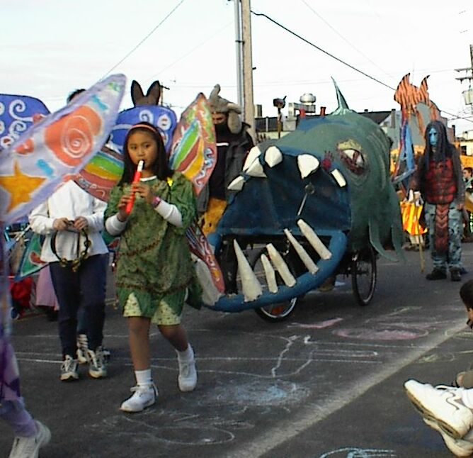

I'm new at N and can't even get past the first few levels. I need help.
Hey I know this has nothing to do with the topic but I need help. Just any tips or something. I have a topic but no one has replied. Please I can't even beat the first few levels. I'm clueless
thanks. Oh! and is there any way to get the flavours without beating the columns?
I was desperate so I put in cheats. How do I get rid of them so I can do it right?
dang. there's no way I can beat a whole column. even with cheats! (I've tried. the closest I got was 59 level 2 and never could beat it.) the farthest I got without cheats was 02 level 4 (I think)
Sorry it took me so long. I couldn't get online until today.
Well, I get so far and EVERY time I get stuck on one of them. I have onlyfully finished 00 and 01. I keep on trying and trying for hours or as long as I can, and can't ever beat it. Then the next day, I get on again and try and still can't beat it. I just want to get the flavours and the secret mode. Oh! By the way, do the flavours change N's color? If they do, then how come the first column's flavour is black, if N is already black colored?
What does Boss Mode do?
oh.
I think I'm going to stop playing N
It's too hard. I still haven't been able to beat any columns at all.
I'm not good enough...
No. I know wall-jumping and everything. I just can't beat them. I keep on trying but I'm killed by the same little thing every time. So I try a different level. It works for a little bit... then the same thing happens!
Oh, and I forgot to tell you. The farthest I've gotten WITHOUT cheats, is 01 and 11. I put it in wrong.
Any tips for this level?
Copy and pate them into the text boxes on the editors:
Level Data\ First textbox
0100000000000000000000000000000000101111111100000101111001000000011010001000010010000000000000011110100100000000000000100101001000000000000001001010010O0000000000001111110010Q000000000001010101001010000000000110100010010P000000001000000110001PP0000000000100101000010111111110001011110001001000000110010100000010010000100000111000000011100000001000000000000000000000010000000000002000000111100000000002200000010000001000000020000001001110010000000200000110010100100000022000001001001001000200200001100100000010002002000110001000000100022200011100100000001000020000101010000000010000000000010100000000100000000000301000000001000011111135040010000000000100000003500000000001110011111250000000001000000000000000000000|5^36,36!9^204,84,0,0,3,5,1,0,0!6^108,204,3,0,2,2!6^132,204,3,0,2,2!6^156,204,3,0,2,2!4^108,570,1!4^60,570,1!4^144,210,1!4^108,210,1!4^156,210,1!4^132,210,1!4^120,210,1!4^108,210,1!12^132,564!12^156,564!12^528,168!12^540,168!12^552,168!12^564,168!12^576,168!12^576,180!12^576,204!12^576,192!12^576,216!12^564,216!12^552,216!12^540,216!12^528,216!12^516,216!12^504,216!12^516,168!8^348,132,0!8^360,132,0!8^372,132,0!8^384,132,0!8^396,132,0!8^408,132,0!8^420,132,0!8^432,132,0!8^444,132,0!8^408,36,1!2^288,288,0,-1!2^756,576,0,-1!2^768,576,0,-1!0^132,372!0^132,384!0^132,396!0^132,408!0^144,408!0^156,408!0^168,408!0^168,396!0^168,384!0^168,372!0^156,372!0^144,372!0^144,384!0^156,384!0^156,396!0^144,396!0^228,384!0^240,384!0^252,384!0^264,384!0^276,384!0^276,396!0^276,408!0^276,420!0^276,432!0^264,432!0^252,432!0^252,432!0^240,432!0^228,432!0^228,420!0^228,408!0^228,396!0^252,408!0^264,360!0^240,360!0^204,396!0^204,420!0^240,456!0^264,456!0^288,396!0^288,420!0^216,372!0^216,444!0^288,384!0^288,372!0^288,444!0^420,348!0^432,336!0^444,336!0^456,348!0^456,360!0^420,360!0^432,372!0^444,372!0^444,384!0^444,396!0^432,408!0^456,408!0^420,420!0^468,420!0^432,384!0^420,384!0^456,384!0^468,384!0^444,348!0^432,348!0^432,360!0^444,360!0^516,180!0^516,192!0^516,204!0^516,204!0^528,204!0^540,204!0^540,192!0^540,180!0^528,180!0^552,180!0^552,192!0^552,204!0^564,204!0^576,204!0^576,192!0^576,180!0^564,180!0^564,192!0^528,192!0^360,168!0^360,180!0^360,192!0^372,192!0^384,192!0^384,180!0^384,168!0^408,168!0^408,180!0^408,192!0^420,180!0^432,180!0^432,168!0^432,192!0^456,168!0^456,156!0^456,192!0^360,156!0^372,156!0^384,156!0^408,156!0^432,156!0^420,168!0^288,216!0^276,228!0^300,228!0^264,240!0^312,240!0^288,228!0^288,240!0^288,252!0^288,264!0^288,276!9^204,84,0,0,21,23,1,0,0!3^348,324!3^336,312!3^348,312!3^336,324!1^336,312!1^348,312!1^348,324!1^336,324!11^492,516,756,36!9^756,36,1,1,26,12,0,0,-1!9^756,36,1,1,27,12,0,0,-1!11^612,324,312,360!1^324,396!1^360,372!1^324,408!1^372,372!1^360,408!9^300,108,1,1,11,2,0,0,-1!9^300,108,0,0,13,3,1,-1,0!9^300,108,0,0,10,4,1,0,0!9^300,108,0,0,9,6,1,0,0!9^300,108,0,0,12,6,1,-1,0!9^300,108,1,0,11,5,1,0,-1!9^240,204,0,0,9,8,1,0,0!6^228,156,2,0,2,0!6^228,108,3,0,2,2!6^252,108,3,0,2,2!6^300,156,3,0,1,2!6^228,204,3,0,1,2!6^324,84,3,0,1,2!6^348,84,3,0,0,2!6^252,204,3,0,0,2!6^252,180,3,0,0,2!6^252,156,3,0,0,2!6^276,156,3,0,1,2!6^276,132,3,0,2,2!0^300,108!0^300,96!0^288,96!0^288,108!0^288,120!0^300,120!0^312,120!0^312,108!0^312,96!11^492,36,300,108!1^120,480!1^192,492!1^228,504!9^360,408,0,1,3,5,0,-1,0!9^204,84,1,1,14,22,0,0,0!9^204,84,1,1,31,4,0,0,-1!9^204,84,0,1,30,8,0,0,0!9^684,444,0,0,21,23,1,-1,0!9^360,156,0,0,2,13,1,-1,0!9^636,132,1,0,26,5,1,0,0!9^636,132,0,1,26,5,0,0,0!9^636,132,1,1,26,5,0,0,-1!9^636,132,0,1,26,5,0,-1,0!9^636,132,0,1,26,6,0,-1,0!9^636,132,1,1,27,6,0,0,-1!9^636,132,0,1,27,6,0,0,0!9^636,132,0,1,26,7,0,-1,0!9^636,132,0,1,26,7,0,0,0!9^636,132,1,1,27,7,0,0,-1!9^636,132,0,1,26,8,0,-1,0!9^636,132,0,1,26,8,0,0,0!9^636,132,1,1,26,8,0,0,0!12^636,204!0^468,36!0^456,36!0^444,48!0^420,60!0^396,48!0^384,36!0^348,36!0^324,36!0^288,36!0^276,48!0^276,60!0^276,84!0^276,72!0^276,36!0^300,36!0^312,36!0^336,36!0^360,36!0^372,36!0^408,60!0^432,60!0^276,96!0^288,84!0^300,84!0^276,108!9^204,84,0,0,21,21,1,-1,0
demo data\ Second textbox
533:0|0|35791394|35791394|35791394|107880994|107374182|107374182|107374182|107374182|102|0|0|107367424|107374182|107374182|107374182|107374182|107374182|107374182|107374182|107374182|107374182|107374182|35791394|107374306|107374182|107374182|115483174|107374182|107374182|107374182|40265318|107405858|107374182|107374182|107374182|107374182|89915938|89478485|89478485|89478485|89478485|89478485|89478485|1109|35791394|34|0|201326592|89478468|1092|0|0|0|0|97587200|89478485|89478485|89478485|89478485|89478485|89478485|89478485|17895765|89510161|89478485|89478485|107374181|107374182|36071014|71582912|4|35790848|35791394|35791394|34
tell me what you think
Level Data\ First textbox
0100000000000000000000000000000000101111111100000101111001000000011010001000010010000000000000011110100100000000000000100101001000000000000001001010010O0000000000001111110010Q000000000001010101001010000000000110100010010P000000001000000110001PP0000000000100101000010111111110001011110001001000000110010100000010010000100000111000000011100000001000000000000000000000010000000000002000000111100000000002200000010000001000000020000001001110010000000200000110010100100000022000001001001001000200200001100100000010002002000110001000000100022200011100100000001000020000101010000000010000000000010100000000100000000000301000000001000011111135040010000000000100000003500000000001110011111250000000001000000000000000000000|5^36,36!9^204,84,0,0,3,5,1,0,0!6^108,204,3,0,2,2!6^132,204,3,0,2,2!6^156,204,3,0,2,2!4^108,570,1!4^60,570,1!4^144,210,1!4^108,210,1!4^156,210,1!4^132,210,1!4^120,210,1!4^108,210,1!12^132,564!12^156,564!12^528,168!12^540,168!12^552,168!12^564,168!12^576,168!12^576,180!12^576,204!12^576,192!12^576,216!12^564,216!12^552,216!12^540,216!12^528,216!12^516,216!12^504,216!12^516,168!8^348,132,0!8^360,132,0!8^372,132,0!8^384,132,0!8^396,132,0!8^408,132,0!8^420,132,0!8^432,132,0!8^444,132,0!8^408,36,1!2^288,288,0,-1!2^756,576,0,-1!2^768,576,0,-1!0^132,372!0^132,384!0^132,396!0^132,408!0^144,408!0^156,408!0^168,408!0^168,396!0^168,384!0^168,372!0^156,372!0^144,372!0^144,384!0^156,384!0^156,396!0^144,396!0^228,384!0^240,384!0^252,384!0^264,384!0^276,384!0^276,396!0^276,408!0^276,420!0^276,432!0^264,432!0^252,432!0^252,432!0^240,432!0^228,432!0^228,420!0^228,408!0^228,396!0^252,408!0^264,360!0^240,360!0^204,396!0^204,420!0^240,456!0^264,456!0^288,396!0^288,420!0^216,372!0^216,444!0^288,384!0^288,372!0^288,444!0^420,348!0^432,336!0^444,336!0^456,348!0^456,360!0^420,360!0^432,372!0^444,372!0^444,384!0^444,396!0^432,408!0^456,408!0^420,420!0^468,420!0^432,384!0^420,384!0^456,384!0^468,384!0^444,348!0^432,348!0^432,360!0^444,360!0^516,180!0^516,192!0^516,204!0^516,204!0^528,204!0^540,204!0^540,192!0^540,180!0^528,180!0^552,180!0^552,192!0^552,204!0^564,204!0^576,204!0^576,192!0^576,180!0^564,180!0^564,192!0^528,192!0^360,168!0^360,180!0^360,192!0^372,192!0^384,192!0^384,180!0^384,168!0^408,168!0^408,180!0^408,192!0^420,180!0^432,180!0^432,168!0^432,192!0^456,168!0^456,156!0^456,192!0^360,156!0^372,156!0^384,156!0^408,156!0^432,156!0^420,168!0^288,216!0^276,228!0^300,228!0^264,240!0^312,240!0^288,228!0^288,240!0^288,252!0^288,264!0^288,276!9^204,84,0,0,21,23,1,0,0!3^348,324!3^336,312!3^348,312!3^336,324!1^336,312!1^348,312!1^348,324!1^336,324!11^492,516,756,36!9^756,36,1,1,26,12,0,0,-1!9^756,36,1,1,27,12,0,0,-1!11^612,324,312,360!1^324,396!1^360,372!1^324,408!1^372,372!1^360,408!9^300,108,1,1,11,2,0,0,-1!9^300,108,0,0,13,3,1,-1,0!9^300,108,0,0,10,4,1,0,0!9^300,108,0,0,9,6,1,0,0!9^300,108,0,0,12,6,1,-1,0!9^300,108,1,0,11,5,1,0,-1!9^240,204,0,0,9,8,1,0,0!6^228,156,2,0,2,0!6^228,108,3,0,2,2!6^252,108,3,0,2,2!6^300,156,3,0,1,2!6^228,204,3,0,1,2!6^324,84,3,0,1,2!6^348,84,3,0,0,2!6^252,204,3,0,0,2!6^252,180,3,0,0,2!6^252,156,3,0,0,2!6^276,156,3,0,1,2!6^276,132,3,0,2,2!0^300,108!0^300,96!0^288,96!0^288,108!0^288,120!0^300,120!0^312,120!0^312,108!0^312,96!11^492,36,300,108!1^120,480!1^192,492!1^228,504!9^360,408,0,1,3,5,0,-1,0!9^204,84,1,1,14,22,0,0,0!9^204,84,1,1,31,4,0,0,-1!9^204,84,0,1,30,8,0,0,0!9^684,444,0,0,21,23,1,-1,0!9^360,156,0,0,2,13,1,-1,0!9^636,132,1,0,26,5,1,0,0!9^636,132,0,1,26,5,0,0,0!9^636,132,1,1,26,5,0,0,-1!9^636,132,0,1,26,5,0,-1,0!9^636,132,0,1,26,6,0,-1,0!9^636,132,1,1,27,6,0,0,-1!9^636,132,0,1,27,6,0,0,0!9^636,132,0,1,26,7,0,-1,0!9^636,132,0,1,26,7,0,0,0!9^636,132,1,1,27,7,0,0,-1!9^636,132,0,1,26,8,0,-1,0!9^636,132,0,1,26,8,0,0,0!9^636,132,1,1,26,8,0,0,0!12^636,204!0^468,36!0^456,36!0^444,48!0^420,60!0^396,48!0^384,36!0^348,36!0^324,36!0^288,36!0^276,48!0^276,60!0^276,84!0^276,72!0^276,36!0^300,36!0^312,36!0^336,36!0^360,36!0^372,36!0^408,60!0^432,60!0^276,96!0^288,84!0^300,84!0^276,108!9^204,84,0,0,21,21,1,-1,0
demo data\ Second textbox
533:0|0|35791394|35791394|35791394|107880994|107374182|107374182|107374182|107374182|102|0|0|107367424|107374182|107374182|107374182|107374182|107374182|107374182|107374182|107374182|107374182|107374182|35791394|107374306|107374182|107374182|115483174|107374182|107374182|107374182|40265318|107405858|107374182|107374182|107374182|107374182|89915938|89478485|89478485|89478485|89478485|89478485|89478485|1109|35791394|34|0|201326592|89478468|1092|0|0|0|0|97587200|89478485|89478485|89478485|89478485|89478485|89478485|89478485|17895765|89510161|89478485|89478485|107374181|107374182|36071014|71582912|4|35790848|35791394|35791394|34
tell me what you think
NEVERMIND iT'S MESSED UP
sorry I'm new. and didn't know it would do that.
How do you submit maps to numa? I have an account but I don't know how to put my maps on. 
I'll attach a TXT. file
It must still not work
How do you tweak it?
Oh! I get it.
Oh! I get it.
I need to know the colors for N. I saw the topic last time but I can't find it. I know 0 column is black , I think 1 column is red, and I know 9 column is a secret mode, but I need to know the others. And, by the way, what does black do? N is already black on mine!
Somebody posted them on these forums some time ago, but now I can't find them. I've never been able to beat any columns (or even get close) even with cheats (I can't figure out how to get rid of them!)I just need to know which ones you get from which columns! I can't find them anywhere else!
Nevrmind I found it. Close this topic if you would like. (I don't know how!)
I need tips for this level too.
I need help. I would just like to know which one of the columns is easiest to beat. Mainly the easiest last level of that column. I still haven't gotten a flavour yet because I get stuck on some of the easiest levels.
I included ALL of the flavours on this poll.
No. They didn't have all of the flavours. I looked them up. 
Also Maroon is the red flavour. I just put them down exactly how I found them
Also Maroon is the red flavour. I just put them down exactly how I found them
Sorry 
Catches water grenade and throws it at the Wicked witch. Laughs as she melts slowly and painfully. Throws Pringles can at someone
I vote the Wii for the price and value of it. And Snake!
Prices in USA:
XBOX360- $300- $400 depending on if you want it to play regular XBOX games
Playstation 3- $600 Just too much!!!!
Just too much!!!!
Wii- $250
Value (what other games it can play)
XB360- Xbox if you pay $400
PS3- PS1 and PS2
Wii- Gamecube, Nintendo 64, Nintendo, Super Nintendo (I think that's all of them...)
When I get the Wii I will sell all of my other game systems it can play so I save money!!!
Prices in USA:
XBOX360- $300- $400 depending on if you want it to play regular XBOX games
Playstation 3- $600
Just too much!!!!Wii- $250
Value (what other games it can play)
XB360- Xbox if you pay $400
PS3- PS1 and PS2
Wii- Gamecube, Nintendo 64, Nintendo, Super Nintendo (I think that's all of them...)
When I get the Wii I will sell all of my other game systems it can play so I save money!!!
I vote just Wii (all I can/ will be able to afford!)
This will be locked.
Madam in Eden, I'm Adam
That's all I know.
That's all I know.
Dark Ball Y-E Google search
Here is your search!
Here is your search!
Very good N avatar!

 7/10
7/10
7/10It says "Seriously." Nice avatar! I think that's Link...
 6/10
6/10
6/10It's nice to look at and colorful.
Sounds interesting... I'm in.
I'm in!
Name- Strong Badia
Infintary- Grunt
Heavy- Tank
Light- Recon
Air- Bomber
Fleet- Frigate
Do you has what it takes to take on the Homestarmy?! The answer is: probably so!
Name- Strong Badia
Infintary- Grunt
Heavy- Tank
Light- Recon
Air- Bomber
Fleet- Frigate
Do you has what it takes to take on the Homestarmy?! The answer is: probably so!
Pretty cool.
(N got you 5 points)
(N got you 5 points)
But the Wii is beaten by a cooler looking Wii. Because only a Wii can beat a Wii.
Get It
King
King
I also made a level for clovic. I call it Life. It's a survival level. Since I can't submit a level to Numa, (my computer won't let me for some reason) you will need to go into the editor and put the level data and the demo data in the appropriate textboxes (sorry it's so complicated  )
)
) Elektro Kardiogramm
~Kraftwerk
Mongy your letter was R because R is the last letter in
Earthquake Weather
My Song:
Me
Ja Rule
Mine: 20's 50's 0's 70's 10's 40's 90's 30's 60's 80's
and 60's column easy?
apoplexy
In general, the 40's are very easy, with the exception of 49-4: rage.
But you don't need to beat it for the flavor
What do you mean you don't have to beat it for the flavour?!!?!?!?!?
Number: 13
Country: Solta
Capital: Rubane
Leader: Darius Solta
Flag: Yellow cross on red background
Leadership: Democracy
Religion: Christianity
Main race: White
Population: 500
Location of capital: barely to the left of the spot where the rivers collide
Military Force
Budget- $1,000,000
Sorry. I first posted this at about 1:00 in the morning.
Country: Solta
Capital: Rubane
Leader: Darius Solta
Flag: Yellow cross on red background
Leadership: Democracy
Religion: Christianity
Main race: White
Population: 500
Location of capital: barely to the left of the spot where the rivers collide
Military Force
Budget- $1,000,000
Sorry. I first posted this at about 1:00 in the morning.
Very colorful. Features Link (even though he IS kind of over used, but he's awesome so I won't count off points).
7/10
7/10
Is it Splinter Cell or F.E.A.R. 
or F.E.A.R. Which are the easiest last stages?
Name and Homestar Runner himself. You can make the rest any way you see fit.
I'm tired of having this huge signature!
Oh crap! Am I too late?
I'm tired of having this huge signature!
Oh crap! Am I too late?
May I have an avatar?
Thank you! Thank you! Thank you! Thank you! Thank you! Thank you! Thank you! Thank you! Thank you! Thank you! Thank you! Thank you! Thank you! Thank you! Thank you! Thank you! Thank you! Thank you!
Nevermind. I got it.
Thank you very much!!!
Thank you very much!!!
My copuntry's name is not Dras- Leona
I think he's working on it as I edit this.
But aliens successfully clone 500 humans because without them, they would have nothing to attack.
Well this is disappointing. No updates today either.
This isn't very good but here it is: Electroencephalograph. I didn't look it up. I know it for some stupid reason.
But Halo 2 is much better so they play it instead:
The southernmost country is cold and dry. A barren tundra, life is hard to maintain, but isn't impossible to support a few cities.Dang. There isn't really ANYTHING good about my country. I will post my paragraph later when I can think off something.
Thank you.
50 posts!!!!!


That's my country and I don't know either.
pretty good. I rated it.
Please rate Black Vs. Blue
Please rate Black Vs. Blue
And besides the fact that drugs and cigarettes are dangerous, they are also expensive. I've seen homeless people picking up used cigarettes off the ground, lighting them, and then smoking them. They are so addicted they can't stop. Even when they have no money to buy them.
By the way, I've only skim-read this so I don't know if someone has already brought this up.
By the way, I've only skim-read this so I don't know if someone has already brought this up.
Self:585
Bomb:510
Floorgaurd:138
Gauss:123
Rocket:143
Chaingun:21
Laser:147
Zap:413
Thwump:159
Total:2239
I killed myself more than anything.
Bomb:510
Floorgaurd:138
Gauss:123
Rocket:143
Chaingun:21
Laser:147
Zap:413
Thwump:159
Total:2239
I killed myself more than anything.
Cool motorcycle. 7/10
I know.But he did it and somehow I DID get country 13. I don't know how but I did.
7/10
electroencephalograph melonoma
I didn't spell melanoma right and I did it on purpose
I didn't spell melanoma right and I did it on purpose
Granted, but you drop it the moment it gets fixed and have to pay $500 to get it fixed again.
I wish I had pizza for dinner instead of nothing...
I wish I had pizza for dinner instead of nothing...
Myself
Lemon or Lime
Lemon or Lime
The image won't show up. 3/10 for the text.
Here is the link:
Quicksilver Map
Quicksilver Map
I only got to 01-0 because my computer lagged for a split second and when it stopped I was blown up by a mine. I HATE MY COMPUTER!!!!!
May I be a judge?
CRAP!!! I'm leaving for a week pretty soon and won't have much time to post my paragraph today. This sucks! I just now saw the deadline. I'm going to have to post my paragraph in a few hours.Come to Alagasia we have a strong allience with Exendergarsen Which has a steady supply of teel, iron, nickel, and oil flowing south,and we also have more than enough Bauxite, magnesium, sulfur coming out the mines. you will never go hungry in Alagasia as the supply of fish from the coast is always in a plentiful amount. we plan on setting up hospitlas, firestations, police head quarters dotted all around the country. on the two islnads to the south will be fitted out with private villa's. there are plenty of job oportunities from working in the factories refining the bauxite and magnesium to working in the hospitals and shops.I decided to add a deadline (thanks, lumina). We need to get the game going, so we NEED people to post their letters!
is it okay if i add some more before the deadline? actualy whe is the deadline?
Deadline: June 25th
Favorite to use: Seeker Zap Drones
Worst enemy: Homing Launcher
Oh crap. I got them mixed up in the votes.
Worst enemy: Homing Launcher
Oh crap. I got them mixed up in the votes.
pfftAre you sure you don't go to my school? That's exactly what our school except they will hire anyone, (and I mean ANYONE) the teachers lie to us constantly and then pretend not to know what we're talking about, also they call us stupid among other words that I can't even type in Bash & Thrash!!!
at least your teacher diddnt lose your course work repeatedly, the ones at our school do it all the time like its some kind of game...
they spend such a long time nagging at people to hand in course work, they dont bother telling you that they managed to lose yours until the last minute, then you fail because of the teacher being a retard
I hate our school. Almost all the other kids know about it but none of them, (including me) are brave enough to say ANYTHING about it! And the ones that don't are always doing everything for the teachers and are probably perfect in the teachers' eyes. It sucks.@lumina: I voted that he's a bastard but I should've voted no because you ARE responsible for your work no matter if you are sick or not.
Ok.
I'm going to be gone pretty soon but I will be back in a few hours.
Usually all the time except for Wednesdays and every other weekend.
EDIT: I'm leaving right now. But I'm leaving my computer on.
EDIT: I'm leaving right now. But I'm leaving my computer on.
Crap. I need to post this is the other one.
I'm back. Still haven't got a message. But I'm checking all the time!
The 4th one is messed up. The first drone won't move and you can't get past him.
If you haven't completed any DON'T VOTE!!!
Granted, but you eventually get bored of them. And wish you had wished for a better wish.
I wish I knew the secret unlockables on N.
I wish I knew the secret unlockables on N.
Yang.
Coke or Dr. Pepper
Coke or Dr. Pepper
Flagrant Error
Virus= Very yes.
Virus= Very yes.
Highscores-on games
Games-Usually have controllers of some kind
Controllers-have buttons
Buttons-you push them
Push........
Games-Usually have controllers of some kind
Controllers-have buttons
Buttons-you push them
Push........
I'ts still NaN
Rated the map with a long name.
Please rate:Which Switch?
Please rate:Which Switch?
me-Willtailsmph
PC (but I want a Mac)
Cat or Dog
Cat or Dog
Wish granted, but I was confused by that wish and my head asplodes. (Is that really a bad thing)
I wish that no one will know that I'm scared of wasps..........Oh crap!
I wish for a Mac.
I wish that no one will know that I'm scared of wasps..........Oh crap!
I wish for a Mac.

Chicken or Guinea
DEADLINE IS OVER!!!!!!!!!!!!!!!
I win!...............................................
............................................................
............................................................
............................................................
He's not coming back is he?
This sucks
I win!
...........................................................................................................
............................................................
............................................................
He's not coming back is he?
This sucks
^Banned for banning so many people^
Granted, but the cops blame you for my death and try to arrest you. Then you try to resist and they kill you.
I wish I knew what to wish for.
I wish I knew what to wish for.
Todays Top 10 Posters
Member Joined Total Member Posts Posts Today % of todays posts
Homestar Runner May 09, 2006 66 28 5.29%
scythe33 April 01, 2006 552 25 4.73%
McP3000 March 06, 2006 1006 22 4.16%
SlicesOfBread May 12, 2006 180 20 3.78%
sharc June 08, 2006 27 18 3.40%
Rocket_Thumped January 29, 2006 288 18 3.40%
lord_day March 29, 2006 219 17 3.21%
luminaflare December 27, 2005 294 16 3.02%
yahoozy_Guacamole February 19, 2006 115 16 3.02%
kamikaze3000 November 13, 2005 328 13 2.46%
Total posts today: 529
Member Joined Total Member Posts Posts Today % of todays posts
Homestar Runner May 09, 2006 66 28 5.29%
scythe33 April 01, 2006 552 25 4.73%
McP3000 March 06, 2006 1006 22 4.16%
SlicesOfBread May 12, 2006 180 20 3.78%
sharc June 08, 2006 27 18 3.40%
Rocket_Thumped January 29, 2006 288 18 3.40%
lord_day March 29, 2006 219 17 3.21%
luminaflare December 27, 2005 294 16 3.02%
yahoozy_Guacamole February 19, 2006 115 16 3.02%
kamikaze3000 November 13, 2005 328 13 2.46%
Total posts today: 529
Fierce- like fire
Fire- oppostite of water
Water- fish live in water
Fish- Whales are not fish
Whales- is a city
Btw, whales are related to fish by not being related
Whales isn't really a city. I don't know this stuff. I posted that at like... 2 in the morning.
Fire- oppostite of water
Water- fish live in water
Fish- Whales are not fish
Whales- is a city
Btw, whales are related to fish by not being related
Whales isn't really a city. I don't know this stuff. I posted that at like... 2 in the morning.
banned for banning someone for banning someone for twisting and killing^
^Banned for making me quote this:
QuoteLois Griffin: Who's pickle is this?!?!?!
9/10
http://img157.imageshack.us/img157/8109/st...stuff4vz7ft.gif
QuoteLois Griffin: WHO'S PICKLE IS THIS?!?!?!?!?!?!?!
Make it however you want to make it. It can have N, have Homestar himself, etc. Doesn't matter to me.
I think I'm going to have to quit Colossus. I'm going to be gone for a long time and when I come back, I will be gone more and more after that. I'm sorry if this raises complications, but I will be busy and probably hold up the game. I'm not doing this to get out of writing my paragraph. I would be able to do it. Not very good, but I could do it none the less. I will be gone starting this Friday.
Granted, but it most certainly wiped out all existence, even you.
I wish TNG was out so they could work on N.
I wish TNG was out so they could work on N.
Banned for having smart in your name^
0000000000000000000000000000000000000000000000000000000000000000
00000000T000000000Y0000000000000000000000000000000000000000000X0
000000000000000000000000000000000000000000000000N000000000000000000
00000000000000000000000000000000000000000000000000000000000000000
00000000000000000000000G0000000000000000000000000000000000000000
00000000000000000000000000000000000000000000000000000000000000000
0000000000Z000000000000000000000000000000000000000000000000000000
00000000000000000000000000000000000000000000000000000000000000000
000000000000000000U00000000000000000000000000R00000000000000000000
00000000000000000000000000000000000000V0000000000000000
00000000000000000000000000000000000000000000000000000000000000|5^468,564
00000000T000000000Y0000000000000000000000000000000000000000000X0
000000000000000000000000000000000000000000000000N000000000000000000
00000000000000000000000000000000000000000000000000000000000000000
00000000000000000000000G0000000000000000000000000000000000000000
00000000000000000000000000000000000000000000000000000000000000000
0000000000Z000000000000000000000000000000000000000000000000000000
00000000000000000000000000000000000000000000000000000000000000000
000000000000000000U00000000000000000000000000R00000000000000000000
00000000000000000000000000000000000000V0000000000000000
00000000000000000000000000000000000000000000000000000000000000|5^468,564
People- Some people say persons
Persons- Some fancy persons say people
Fancy- Reminds me of a wedding
Wedding- Boring if your not in it
Boring....
Persons- Some fancy persons say people
Fancy- Reminds me of a wedding
Wedding- Boring if your not in it
Boring....
QWERTY because it's actually a game. Even though it's stupid.
Halo 2 or GTA: San Andreas.
Halo 2 or GTA: San Andreas.
I will eat at Joe's, then hit Rooney in the nose, who will run to timbukto and explode violently into 1,000,000
Yeah!That's not true. It's a joke. Unless you've got proof.....
But you can unlock Sonic and Tails if you beat the game with all characters on hard.
Granted, but it is infected witha virus that erases all your memory, takes over your computer, and somehow implants a bomb into it. You have 30 seconds to live. Make that 25.............
......5...4...3...2...1...BOOOOOOOOOOOOOMMMMM!!!!!!!!!!!!!!!!!!!!!!!!!
I wish the Wii was out.
......5...4...3...2...1...BOOOOOOOOOOOOOMMMMM!!!!!!!!!!!!!!!!!!!!!!!!!
I wish the Wii was out.
I like them both. Pretty cool!
Pretty cool!I have seen flashing sigs that people get that say N fan, Xbox 360 owner, etc. I was wondering where to get them. Here's one:
You put the last locked door through the tile.
Pretty cool. 8/10
I will be gone from 17-25, (I may be able to do it on 23rd and 24th but It's a maybe) and won't be able to judge. Sorry for the inconvenience. I have to go.
I don't have a picture of me. But here's my cat.
Granted, but my nintendo fanatic cousin steals it.
I wish there was a better show on TV right now.
I wish there was a better show on TV right now.
I'm back!
I can't judge demos because I'm on a crappy computer but I will be back on my old one by Sunday.
I can't judge demos because I'm on a crappy computer but I will be back on my old one by Sunday.
^Most likely to go crazy.
I'm back on my old computer!
Tennis>sport>football>cool>hot>sun>sunglasses
EDIT: Found it.
^Insulted sharc
I can't think of anything.
I can't think of anything.
Granted, but you didn't specify what thing you wanted so..... you get the picture....
Post any avatars or sigs made by the program Pivot on this topic. I made one.
Here be mine:
Your head asplode!!!

Me killzorz you.You been had by my throwing knifes...... of DOOOOOOOOOOMMM!!!!!!!!!!!!
Sorry about the color.
Oh, and I got Pivot and some other stuff by going to this webpage. You should download the sprite pack, unzip the folder, then click load sprite in Pivot and click on them. it's awesome! You can have weapons that aren't just made of tiny lines!
I read in my magazine that in Japan the DS has internet just like the PSP.
Does anyone know of a free Image Capture program? This maybe a very stupid question but I've used google and didn't get anything.... well nothing pleasant anyway. Also microsoft Powerpoint is pretty fun/useful. Though you have to buy microsoft Office which costs a lot.
Rated Incorrectly portrayed.
Please rate FMA Tileset . It's not very good so I don't know why it got rated (4/5) by 3 people. It's on my sig.
Please rate FMA Tileset . It's not very good so I don't know why it got rated
(4/5) by 3 people. It's on my sig.This is pretty stupid. I did this at about 3:00 in the morning.
Also I'm making a Pivot Series. But I don't think anybody would like it.
Also I'm making a Pivot Series. But I don't think anybody would like it.
Nevermind. I did it again and got 30 something. Dang I suck!
Since no ones taken it yet, (and it's NOT purple) I'll take yellow. Or blue. No red. I know orange! Uhhhhh.... green! NO!!! YELLOW!!!!!!!!!! Yeah...
1.
2.
3.
2.
3.
My contols:
Left: Left Arrow
Right: Right Arrow
Jump: Up Arrow
Left: Left Arrow
Right: Right Arrow
Jump: Up Arrow
^Has Klonoa 2
Sorta off-topic: I figured out why sometimes the speed will vary on parts of your stick animations. It's because you probably changed the speed on your other animation and when you loaded an animation you didn't reset the speed. So it starts out on that speed but the speed switch resets. Or if you started a new animation the switch stays in the same place but the speed resets. To prevent this from happening just close Pivot before you start or load an animation, get into Pivot again, and load/start the animation.
My Ninja worked for awhile, then was stuck on the left side of my screen, and flew up through the entire monitor. He was never seen again...
tit doesnt work it says that there is something missing
Mine too. It says one of the important theme files could not be found. This can happen with themes that were not installed or authored correctly. You should verify that the wallpaper, screensaver, icons, sounds, and other files are in the correct location.Then it shows the folder name that it is in.
Here is my brother's cat (who recently died). This is in our backyard at our old house. But after my step-dad broke up with my mom we didn't have enough money to pay for the house by ourselves, so we had to move in with my grandparents for awhile. Then moved to a tiny house with a backyard about 3 times bigger than the house. Also will probably never get to see my step-brother and step-sister again because their mom got custody of them and went to Japan because of her husband's job. It's a crazy story but it's my life. I really miss that house. It had 3 beds, 2 baths, a living room you could almost play baseball in it, an indoor spa, an in-ground pool, huge backyard, huge frontyard with a weeping willow tree, and a great neighborhood. My gazebo on the top-right. Pool on the left.
KERON CYST!!!!!!!
KERON CYST!!!!!!!
this pics a couple of months old (or maybe more). oh and homestar who died your brother or the cat it isn't very clear.My cat died.We found him underneath our storage building. Here's a picture of my cousin and my dog lying on the floor for some reason.
KERON CYST!
KERON CYST
wtf is a meteo?
Meteos is a puzzle game for the DS. I don't have it but I've heard it's awesome.
This is my cat at my Dad's house. It's dark though.
Keron Cyst!
Keron Cyst!
is it just me, or does this not do ANYTHING?
All it does for me is open up a buddy info thing, then I close that, I click my resolution, then nothing. zip. nada.
Minimize all your programs and look around on the bottom of your screen. Press all the controls and if you still don't find him then press R. If he still doesn't appear then he's not going to.
@McP3000: Because I don't want to post a picture of myself because I look stupid. And for security reasons. I don't have a picture for this post. Just wanted to point that out.
EDIT: POINT not pint.
EDIT: POINT not pint.
Man I have no chance of ever beating the game since I still haven't beaten one column. But I'll post make-beleive prizes!
You get TNG for free when it comes out!!!
I wish I knew the secret. I've searched Google and everything. I can't find it anywhere.
You get TNG for free when it comes out!!!
I wish I knew the secret. I've searched Google and everything. I can't find it anywhere.
This maybe a stupid and noobish question but... what's RTB?
Return to Blockland. Sorry.
8/10 Pretty neat and animated too.
I have a server called Homestar's server. Password is thewayoftheninja
I haven't made any new pivots in awhile... but here's an old one. Still not very good. I think it was my first pivot ever.
how do you take the little death pictures?Hit Prnt Scr when your N window is open. Go to Paint and Edit > Paste. Then cut out what you want and save the image. Come here to the reply window, and go to the Attach File section. Browse for the picture you saved and then hit Reply.
Nothing happens when I do that. I hit Prnt Scrn and it acts like it's loading for a split second then stops.
Not my best animation. But oh well.
Here's one. His legs are impaled and when he is shocked he stays in the same position.
That's really cool but I thought Luigi was green...
I go away for a week and I come back to see THIS?!?!?!?!?!?
I HATE ......... ponies.......They shall NOT WIN!!!
I HATE ......... ponies.......They shall NOT WIN!!!
This is BY FAR the easiest game I have ever seen!
My current desktop:
Kirby games (especially Kirby: Air Ride) have pretty good music. Halo 2's music is awesome. Ocarina of Time has some of the best and most brilliant music ever to be heard in any video-game. But my personal favorites are the Dark Cloud series and Shadow of the Collosus.
I heard it loud and clear. I'm 12 and I also had the TV on up almost all the way. It made my teeth feel funny for some reason. It was actually pretty loud. All tingling and stuff. Ow...
I was thinking about making it easier for people to compete in N. Let's say your at home and you and your brother are arguing who is better at N. Well instead of having to compare demos, what about being able to hold a competition? You could pick a level or a series of levels to challenge each other. You could take turns doing the levels and the computer will add up your times for all the levels you played and who ever had the lowest time wins! The rules could also be customizable to where you could change what type of battle you want. For instance it could be best time (the best time for a set of levels or one level), most gold (get the most gold or the set number of gold before time runs out), survival (go through the levels and who ever dies first loses, also for this one the computer will choose who has to go first and last by the times of the last level you played), most levels completed in a certain time limit, and many more! If you wanted to this could be online (which seems much better but still) or not. Also there could be a records in the options and show you all the matches you won, how much you won by, and who you won against. You can mess around with whatever else you want to put in it. This could also be available in Robotology ONLY so people would want to buy it more. If you like this Idea I will try to think of more modes but first I need to know if people like this or not. Please add comments. Thank you.
Edit: Fixed some typos and made descriptions.
Edit: Fixed some typos and made descriptions.
Another power-up could be shrinking to half size. So you could get into small places. But this might be really stupid.
And maybe a switch to raise the water level. That could be reusable or some maybe not. That way they wouldn't be able to get up high until they switched the water level. There could also be water puzzles that need you to press many different switches that raise the water different levels. You would have to actually think before just pressing them by a random guess.
Look at my map FMA Tileset. See the Curves that just look like bumps? I would like a tile that could fix this.
http://en.wikipedia.org/wiki/Robotology
Futurama is awesome. I thought they liked that show when slurms mackensie appeared as 99 2's name. Yes!
Quote3D, multiplayer, warfare, and ideas which add more keys to play will not be implemented, NO EXCEPTIONS. Please do not suggest them.
No multiplayer. Unless you mean taking turns.
EDIT: Did you edit the title?
It IS taking turns.
That's why it's not multiplayer.
Yes but this would have different modes like survival. And it would add up your score. Read the paragraph.
When you vote on this are we voting for just the shooting aspect of the game or overall gameplay? Nonetheless I say Halo 2.
Can we have lightsaber effect on things that aren't lightsabers?
I hope he comes back.
Still didn't work.
Thank you. That's a first.
I'll do it. Here are my stats.
Name: Homestar Runner
Class: Office Worker
Anything Interesting: Has very good eyesite*
*Does that count?
Name: Homestar Runner
Class: Office Worker
Anything Interesting: Has very good eyesite*
*Does that count?
But the rocker can't break the UNBREAKABLE GUITAR!!!!!!!!!
DO NOT POST UNTIL YOU HAVE READ THE RULES!!!!!Rules:
Basically you make a picture of what you think the user who posted right before you looks like. You make them based on what they do or have done on the forums and/or what their usernames are. So they probably won't look like real people. Because everybody already knows what I would look like, the first poster can use this made up username: bdude
Thank you and I hope you like it. This is my first good Idea ever.
Basically you make a picture of what you think the user who posted right before you looks like. You make them based on what they do or have done on the forums and/or what their usernames are. So they probably won't look like real people. Because everybody already knows what I would look like, the first poster can use this made up username: bdude
Thank you and I hope you like it. This is my first good Idea ever.
The Metanet Forum is a nice place where bad grammar and pink champagne go together like Kansas wine with hot mustard sauce. However, the unrighteous N00bs of doom seem incapable of sneezing. This means that all the sensible forumers have gone to Barbados to have babies and learn boxing. The Caribbean women are rather disappointed because giant penguins from SM64 are eating all their juicy pumpkin dumplings. Horrors from Beyond invaded the vast reaches of cheese under orders from the German dictator Hitler. "Great pumpkins!" exclaimed that guy from down the street who was from Canadian landfills that became buttons of god-awful purple shirts made for hippies who didn't use soap or shampoo because Maniac started to kill bunnies with his golden watch as he dumped gorillas into the sewers. Reminiscent of many smilies, the purple ninja smiled eight times like this: *biggrin*. Then Mr. Phlart had four orgasms which happened to turn Bowser on somehow. But they came too quickly and gave Bowser his evil clone and some ass. He liked it, but as he shampooed his pants he got a trio of orgasms living in his big fat shell. By this time
I like the color green, burninating dragons, and illuminated rings.
I usually sing in the shower because in the shower I feel very, very calm and relaxed.
Height and Weight: You don't have to put your weight or height, but you can if you want.
Age: Same as above.
See.
I would like to ask one question..... How do you know if you are the left or right half.
Maniac you should've read my whole paragraph. "You make them based on what they do or have done on the forums and/or what their usernames are. So they probably won't look like real people. Because everybody already knows what I would look like, the first poster can use this made up username: bdude."And look here to see what I look like. and as for what spiker 5 looks like:
I don't know what you look like Homestar Runner, so I guessed

 Yes very nice smilies.
Yes very nice smilies.^Hates Princess Mononoke (I think that's how you spell it...)
Well my mom is on a low budget and she needed to do something. So she cancelled 2 of our TV's Dish's and she gave me and my brother basic. This means no MTV2, COMEDY CENTRAL, or Cartoon Network (which means no [adult swim]). This sucks. I won't have [as] until she gets a raise which god knows when that'll be. DAMMIT!!! It's also sunday and there are new episodes. This really, really, REALLY SUCKS!!!!!!!!!!
@Homestar Runner: what for? Use Prt/Scr, next to F12. It copies whatever is on the monitor onto your clipboard. (Use Alt in conjunction to capture only the active window for non-fullscreen shots.) I realize some games disable this function for whatever reason, but still I find any external Image Capture program useless. Just look in their readmes, look for an empty Screenshots directory in the game's directory and smack all the F# keys to see if it'll send a graphic there, or ask the company how to take a screenshot in-game if Prt/Scr doesn't work.
Wow, that took a minute
Print Scrn doesn't work for me. Nothing happens. But I found a free image capture... er screen capture. Download it now! HotScreen It pops up when you press print scrn.
What did not work? I mean: How did it not work? I mean: Which way did it work as it did not work?
Concerning the .NET FW 2.0: I would not have added a page about system requirements on my webpage without a reason. I'm getting sick on problems only caused by the fact that people do not read the system requirements.
I downloaded the newest version of .net FW I could find, ran your program and the same error came up. Also I tried to go to the System Requirements page and this is what came out... --------------------Attachment was deleted
Yes I should tell my mom. My dad has cox basic cable and it's a lot better. Damn. She was paying like $60 for one of ours. It had [as]. Hey could someone tell me what's happening on Family Guy right now? Also my mom already stole like $140 and paid me back $20. She did it to pay for stuff. My brother has like $300 but he's hiding it.
My brother has like $300 but he's hiding it.I made mine small so it didn't take up much space. 
I joined. w00t. Oh and get 100 clicks while testing your skills here. Happy Clickage!
Node... what?
I just tried this and I figured out I could put items OUTSIDE THE BOUNDARIES!!! Check it out. Notice that the drones' eyes are in the top left corner and the doors' lines go there too. WTF? --------------------Attachment was deleted
That's good. I'm just glad this is being kept current. Unlike N wars.
These are all of the pictures I took on my vacation.
Click on the links to look at my images:
Behind Our Hotel
Ice Rink
Restaurant
Restaurant
Baker Hotel 1
Baker Hotel 2
Baker Hotel 3
Baker Hotel 4
Baker Hotel 5
Baker Hotel 6
Baker Hotel 7
Sunset
Hospital (nobody got hurt my step-mom works there)
Light-up Church
Click on the links to look at my images:
Behind Our Hotel
Ice Rink
Restaurant
Restaurant
Baker Hotel 1
Baker Hotel 2
Baker Hotel 3
Baker Hotel 4
Baker Hotel 5
Baker Hotel 6
Baker Hotel 7
Sunset
Hospital (nobody got hurt my step-mom works there)
Light-up Church
Cool. Where did you go?
I went to Ft. Worth and Dallas. That one was in Ft. Worth. On the way back we visited a lot of places. Mostly old abandoned places like the Baker Hotel. Okay, second picture. I think it's at the Dallas (maybe Ft. Worth) Mall. It's the Ice Rink.
Go here: Picture 2
got it on my third try, if you dont want to see the walkthrough, close your eyes and go away.
this is for 16
I just realized that levels are different for everyone.
I put mine in the most updated one I found. Here:
--------------------Attachment was deleted
--------------------Attachment was deleted
Sorry for double post but nobody would comment. This is at a restaurant we went to.
Go here: Picture 3
Go here: Picture 3
just use the dit button. And the pics look great.You mean Edit? Then it wouldn't show that it's been updated. Ok #4. This is a wall at Barnes & Nobles:
Go here: Picture 4
By the way, I will try to make a slideshow with Windows Movie Maker.
Can You make a Homestar Runner Fan tag? White please.
Also 2 N tags: One that says Completed 1.4 and one that says Hasn't Completed 1.4 . Or something similiar that isn't very long.
Also 2 N tags: One that says Completed 1.4 and one that says Hasn't Completed 1.4 . Or something similiar that isn't very long.
Cool. Here is number 5. It's the Baker Hotel.
Click this: Baker Hotel 1
Off-Topic: Oh and try the NEW Bunny! Click on it in my sig.
Click this: Baker Hotel 1
Off-Topic: Oh and try the NEW Bunny! Click on it in my sig.
Yeah I would like to do something like that... 
^Hates making things go "BOOM!!!"^
 Must.... Kill.... Lincoln!!!
Must.... Kill.... Lincoln!!!Ok. Hold on...
EDIT: Done and done. Ugh... I deserve a reward... *watches Numastar Runner*
EDIT: Done and done. Ugh... I deserve a reward... *watches Numastar Runner*
Artist:DANGERDOOM
Song:Korndogs
Translation:No it is destroyed by the evil korndogs before it hits the ground.
Question:
Song:Korndogs
Translation:No it is destroyed by the evil korndogs before it hits the ground.
Question:
EDIT: I hate typos.QuoteIf I point this gun at your head and pull the trigger, will you be dead?
Someone should make a picture that has N standing on a beach and looking off into the distance at the Sunset/sea. That would be really cool.
nvm.
Ah good good, much easier to navigate, But damn kid, you need to sort the focus out on your camera. Pretty much all of the pictures are blurry.
They are? They don't look blurry at all to me. Well, they do at first but when it loads all the way they don't. There are 2 of them that do because I zoomed in but the rest aren't.
Pretty Good.
Ok. That was hella funny. You, sir, are my new favorite. Bask.
Thank you.
The only thing I could make is something with N Poser but you probably wouldn't want it.
It isn't showing up.
I don't know you but welcome back. Also you only have 13 posts so you must not of been around very long before you left.
It looks nice...
I dont see the illusion though.
Look at the circles when you move your head towards and away from the picture.
thats odd i see it....
Hmmm...
It's not showing for me either.
Hey Rebar can you start your server again?
I can't start one.
*Looks at bed* Brown
*sarcastic*Looook. I'm being illeeegall. I'm breaking the laaaw. Oh noooo...*not sarcastic* That was fun.
*sarcastic*Looook. I'm being illeeegall. I'm breaking the laaaw. Oh noooo...*not sarcastic* That was fun.
I draw up most of my maps, usually on graph paper, and I've made symbols for the different types of items. This is cuz I usually create maps while in class, so it's logical to draw up. This helps out with the planning, but I tend to not be very open to rather large changes, even if it would help, putting more of my maps in the scrapper.I do this as well. I usually get an idea, jot it down on a post-it note, and transfer the main concept into NED when I get off work.
Insofar as the poll, I do it all, really, except for option 5.
I do number 1. But I have drawn mazes (which I REALLY like to do) and WISHED I could implement them into N but they have much more Items and different kinds of enemies.
Nice, look at this animation I made with it...hope it works!It isn't animated for me...
EDIT: Oops, nevermind.
It animates one time only then you have to refresh the page to see it again.
Tilting the controller would make the ninja go left or right. "A" would probably be jump. (It's the most common button to be used on most gaming consoles.)
It would be cool, and it would attract many gamers to play N online and visit the forums. So...
Pros: More publicity, and possibly more suggestions for upcoming games from Metanet, etc.
Cons: Thankfully, none that I can see.
The answer's yes from me!
Ditto.
Cool. Off-topic: Rebar can you open up your RTB sErver?
Yeah that's kinda what I meant.
What'd you do?
Fall is coming, and so are we!
I mean... Fall is coming, and with it, Halloween! I haven't gone trick or treating for about two years (My last time I went as Captain Kirk. You'd love my William Shatner impression), and this year, I'm going to the Forest of Fear in New York! You see, I just made my annual trip to the New York Renaissance Fair in Sterling Forest, Tuxedo, New York (which is open until September 24th, for all you who are interested and local), where I found out the times for their Annual Shocktober Forest of Fear! I'd always wanted to go, but I never had friends (...) who could drive. It's supposedly very traumatic, with a Cirque du Freak, Carn-EVIL, and lots of cool stuff.
So, I'm getting together a large group of people to go! I've asked my mother, and convinced her! That's the largest hurdle on the track, right? Now, I've decided that for a man my size and form, I could bind myself and strap on some stilts and some of those skeleton arm extenders (like this:) and I'm going as Jack Skellington (given, a 9 foot something Jack Skellington...).
They look more like robot arms. I've seen things that are an actual hand (not real skin and bone) and you control all the fingers and stuff. But I don't go trick-or-treating. And even if I did want to (which I don't) I couldn't because I have to GIVE AWAY candy at my grandad's office. Oh well. I still get to steal most of the candy.
^LOL, thanks guys, come to my server, i set it up.
name= [MC]Ultima - free build
Sweet. Is it still up or am I too late? Nevermind I'll find out myself.
Maybe...
Ghost N is interesting...but it seems like none of this'll get implemented anyway
Probably not.
Load the DDA: it's my birthday and I'll die if I want to into your userlevels and play it. It's a perfect example.
wtf? i just played a level from numa and it had moded drones. well anyway a zap drone dont zap you it just sits there the michine gun drone zaps you and the laser drone moves really fast and it shoots multuple lazers one after another. this is just making the level really hard and if i try to delete it it does'nt do anything.
any info what to do about it?
Like sucker said please link the level.
Coolio. OMFG! I have one of those arms!!!!!@Trogdor: Those arms you just described in your last post (with INDIVIDUAL moving fingers) were for sale at my school for awhile...... D-Don't ask......
Trogdor I don't have any information on the arms because my school doesn't sell them anymore. Also I'm in a completely different school this year. Sorry. Also I went to a party last Halloween too. It was my friend's birthday party. It was pretty fun.
I tried to register but it keeps saying you may only use a-z A-Z 0-9 commas and periods in your username. My username is homestar runner. I didn't use anything I wasn't supposed to. My passowrd is the same way. I redid them all and still says the same thing!
EDIT: I finally put in MCHomestar and it worked.
Edit Edit: I made a metanet forumers server too.
EDIT EDIT EDIT: The server may be called Metanet Forumers with capitals but I'm not sure.
EDIT EDIT... I lost count: it is spelled "metanet forumers"
EDIT: I finally put in MCHomestar and it worked.
Edit Edit: I made a metanet forumers server too.
EDIT EDIT EDIT: The server may be called Metanet Forumers with capitals but I'm not sure.
EDIT EDIT... I lost count: it is spelled "metanet forumers"
I didn't. I was afraid I wouldn't get it.
No. They were for sale at ONE Book Fair. Only one.
OK. I'm about to put forward a question. This question is a suggestion by smartalco.
I would like all you answers.
Question. Should the N Newsletter (N Nwslttr) be done Monthly or Bi-monthly?
TP
Maybe Weekly? If not then bi-monthly. I would also like to help.
The twump didn't even chase the ninja on mine. Nothing was NaNned either, I checked.
Wiiiiiiiiiiiiiiiiiiiiiiiiiiiiiiiiiiiiiiiiiiiiiiiii!!!!!!!!! Yay!
Try the Troy's Colony server sometime. It's pretty cool.
*replaces krusch's shingles with a bulldozer*
Oh I thought bi-monthly ment TWICE a month. Monthly then. Oh btw, I'm helping with the newsletter.that makes no sense, bi-monthly (i hope) means once every two months, or six times a year, so your jumping from 52 times a year to 6?!??OK. I'm about to put forward a question. This question is a suggestion by smartalco.Maybe Weekly? If not then bi-monthly. I would also like to help.
I would like all you answers.
Question. Should the N Newsletter (N Nwslttr) be done Monthly or Bi-monthly?
TP
Printer=Oh crap. No way I'm doing that. Not today. Not tommorow. Also you can only put in a word between 3-11 letters long. Different Word:
Pros
Really
Inter
Nothing
Terifically
Extremely
Ridiculous
i don't think this is okay, but i tried.
Supercalifragilisticexpialidocious (WTF prompted me to type that!?!?)
Neighbor
Thank you for my tags! More tags:
Homestar Runner:


[adult swim] Veiwer (black)
All for now. I will add credit for you in my sig.
*bumpitty bump*
splodin' chipmunk (tell me if you want the speed changed, or any of the tags different):

Could you put all of those tags up seperately?
That'd be cool. Somebody needs to make a flashing tag maker or something. Where you just load the tags up and put in the delay time. I don't have flash or anything like that
.Crap. You can't put more than 10 images in your sig. Do you think I could use Windows Movie Maker to make a flashing one?
This works.
No my ninja died when I tried that.
me-Willtailsmph
The only way you can REALLY get into Runescape is if you are a member.
When I get my labtop I would like to get this game but would like some more information such as:
1. How's the multiplayer?
2.Is there a mic/headphone that works with it?
3.Do you play often?
4.Any other special things?
1.I've heard it is flawless.
2.I'm pretty sure there is.
3.No. But it's very popular right now so there is bound to be someone playing it.
4.Don't just get it for the Multiplayer, the Single Player is very good too.
Crap. You can't put more than 10 images in your sig. Do you think I could use Windows Movie Maker to make a flashing one?I'm not sure about WMM, but I could do it for you if you want; just give me the images and tell me how long you want the pauses in between.
Ok could you do all of the ones I currently have in my sig and add the Halo Player and the Flash User. Also, what do you use to animate the tags? I tried Windows Movie Maker and it would only save as a windows movie maker file. I also tried Pivot (I just used each tag as a background for one frame) but that didn't work either.
for an summary are you going to renew this game
What? Do you mean "For a summary are you going to review this game?" Still doesn't make sense...
Could you make me a Legend of Zelda tag, and a Wii tag, if you could? I've always wanted sig tags.There is already a future Wii Owner Tag. Also could you please add the N League tag to my animated tag? And as for the time between each one, you pick.
(Just make the colors blue, orange, and gray.)
Homestar
======
"Ugh.... My head."
*gets up and looks around*
*sees one man walking around, another sitting very quietly with a knife in hand, and lots of others laying unconscious*
"Who are you people? Where are we?"
*no answer*
*sighs and sits down waiting for all this to be explained...*
======
"Ugh.... My head."
*gets up and looks around*
*sees one man walking around, another sitting very quietly with a knife in hand, and lots of others laying unconscious*
"Who are you people? Where are we?"
*no answer*
*sighs and sits down waiting for all this to be explained...*
Penguins? With deep voices? WTF?!?
Ooh. That's rough.
*replaces Pavel's roof shingles with LIMER*
*replaces Pavel's roof shingles with LIMER*
The only thing is it doesn't have a transparent background. Though it looks awesome! These 2 smileys will go with my other favorites which are:
and  .
.Miniclip.com has lots of fun and free games!
Okay sounds good. For the mic/headphone I'm not sure what to buy. I've heard of ventrillo, but I don't know how to get it or all the details.
Maybe if you already have a mic for your computer you could use it.
Bye. The first comic I'm in and the creator goes off and leaves. Crap. Oh well. See you in September!
FINALLY!!! A new person with good grammar and spelling that doesn't type in all caps! Yay!
It's over, but I am making a server tonight, I'll be on IRC so tell me if you want to join.
I don't have IRC and won't be getting it. [reason]Because it isn't free and I won't be able to convince my parents to give me the money.[reason/]
The Metanet Forum is a nice place where bad grammar and pink champagne go together like Kansas wine with hot mustard sauce. However, the unrighteous N00bs of doom seem incapable of sneezing. This means that all the sensible forumers have gone to Barbados to have babies and learn boxing. The Caribbean women are rather disappointed because giant penguins from SM64 are eating all their juicy pumpkin dumplings. Horrors from Beyond invaded the vast reaches of cheese under orders from the German dictator Hitler. "Great pumpkins!" exclaimed that guy from down the street who was from Canadian landfills that became buttons of god-awful purple shirts made for hippies who didn't use soap or shampoo because Maniac started to kill bunnies with his golden watch as he dumped gorillas into the sewers. Reminiscent of many smilies, the purple ninja smiled eight times like this: *biggrin*. Then Mr. Phlart had four orgasms which happened to turn Bowser on somehow. But they came too quickly and gave Bowser his evil clone and some ass. He liked it, but as he shampooed his pants he got a trio of orgasms living in his big fat shell. By this time BOWSER HAD REALISED he was dreaming, because of which he started wetting Toad's giant mushroom-head day after day. In other news, 666 rabid aardvarks have been seen eating giant green Poddington Peas, which tasted nothing like
^ banned for not having an "s" between "cow" and "go"
^Banned for not being a specific amount of time.
I've tried to download GIMP and it won't work. I want it but I can't get it. It says it couldn't find a program to run it with.use teh GIMP, ( GIMP ) give each picture it's own layer, then save it as a .GIF then when the (gif can't handle layers) warning prompt comes up, click on "(o) save as animation" (the (o) is the button) and choose your delay time*bumpitty bump*Could you put all of those tags up seperately?
splodin' chipmunk (tell me if you want the speed changed, or any of the tags different):
That'd be cool. Somebody needs to make a flashing tag maker or something. Where you just load the tags up and put in the delay time. I don't have flash or anything like that
did that help?
On what server?
Somehow, I can't get the IRC to work.
What server were you playing on Rebar? I couldn't find you!
I'm confused. Is that water or what? Hmmm.....
Banned for being a newgrounds user /\
^Banned for being mysterious power.
Right now I'm playing on Adam's server. You can make one and I'll join it though.
I can't make servers.
Where did you go now?
What about RPG city?
I can't find that server.
Ha! I suck more than you!!! ...... Wait..... what?
I found caops and robbers
Why can't we? It's the other games section.
Hey could someone get on the IRC and tell Rebar I don't have IRC?
a-caridi:
Homestar Runner, I use Fireworks for the animation, same as I use to make the images. I'll do yours soon.
Edit: Post 333...

How do you get Fireworks?
(Note, this is possible for version 2.0 only)
New different looking characters that could solve puzzles the nameless ninja guy can't!
Ex#1: A slimmer ninja that can latch onto cielings and run on them. (awesome!)
Ex#2: A lighter, girl ninja that can float in the air and jump higher,
Ex#3: A heaver ninja that can block certain attacks, (again, in version2.0 where new buttons may be implemented for a block button.)
Ex#4: A shady ninja that runs really fast, climbs walls fast, and can attract gold to him, (Like Ratchet and Clank)
The only way I think this could be implemented is if they were unlockable secrets and didn't have special powers. They just look different. Like skins. And maybe each one could be effected differently be each flavour and..... wait..... this is turning out as a suggestion itself.... Forget I said anything...
Thats the point, he goes so fast that he dies when he hits the end wall.
No my guy dies at the very first wall.
Yes can you tell us ... Puhhh-leeeease?I just found an AMAZING, amazing free online game that I want to keep to myself for a bit, but I will definitely be telling you guys about it soon. It just launched on August 1st, and it is right up there with N, in terms of addictitude.
Pleeeeeeeeeeeeeeeeeeeeeeeeeeeeeeeeeeeeeeeeeeeeeeeeeeeeeeeeeeeeeeeeeeeeeeeeeeeeeeeeeeeeeeeeeeeeeeeeeeeeeeeaaaaaaaaaaaaaaaaaaaaaaaaaaaaaaaaaaaaaaaaaaaaaaaaaaaaaaaaaaaaaaaaaaaaaaaaaaaaaaaaaaaaaaaaaaaaaaaaaaaaaaaaaaaaaaaaaaaaaaaaaaaaaaaaaaaaaaaaaaaaaaaaaaaaaaaaaaaaaaaaaassssssssssssssssssssssssssssssssssssssssssssssssssseeeeeeeeeeeeeeeeeeee???????????
Fireworks isn't free, I got it as part of Studio MX 2004 a while ago, but you can download a trial from adobe.com.
GIMP should run... are you using a mac?
Edit: -Jakel-:
And the existing Wii one:


I have a PC. Am I supposed to download anything else WITH GIMP? I clicked on one of the mirrors and downloaded the first thing on the list.
Homestar
======
"Sure I'll help."
*helps jacob look for the map*
======
"Sure I'll help."
*helps jacob look for the map*
I can't seem to be able to play it. I have Flash 8 but when I click the word Sphoid at your website it says downloading from that url but when it is done nothing comes up. Long sentence.
POE! May I have a sig? Here is the image and you can edit, resize, or do anything you want to him. Just don't slaughter him. He is my friend.
My mom steals money from me and then makes up some dumb excuse why she can't pay me back. Currently she has stolen $140 from me and given back $20. My dad is a lot nicer than my mom. So is my step-mom. And my mom makes me get stupid shit for her too. Like she will be standing in front of the fridge and then walk away and say "Will you get me a Diet Coke?" Ugh. Makes me angry. I also live in a small town with nothing like that. But there are good stores 20 miles away. We still have grocery stores but the only restaurants we have are: Dairy Wueen, Whataburger, Sonic, and Subway. Kind of sucks.
The vet is healed by a doctor and the cat is saved! Then they were put in an animal shelter and adopted by some guy! Then the cat had babies! YAY!!! KITTENS!!! By the way, LIMER that is a disturbing picture. And will be banned in Austria.
Homestar
======
"Umm.... not much"
"I'm pretty perceptive with good sight and I can drive small vehicles."
*pauses then starts looking for supplies again*
======
"Umm.... not much"
"I'm pretty perceptive with good sight and I can drive small vehicles."
*pauses then starts looking for supplies again*
my greatest ever, its got sound and im workin on the next one...
Stickfight
i was just screwin around with this that i made a big deal out of it, pretty cool
Idiots Driving
edit
That's cool, could you post it as a pivot file so I could use N?
here, i made n in pivot a long time ago and i posted it as a stick file, heres the link
N in pivot
Stickfight was awesome and Idiots Driving was really funny! I love the last part. You should make a sequel called retards being attacked. That would be cool.
This is my first in a series and it isn't very good. It also goes way to fast but....here it is (comments would be appreciated):
Here is a new weapon I made: The Claw. You can stab things with it, or extend it for tons of different things (like latching on to enemies,use it as a grappling hook, etc.) the video is bad but just look at what you can do.
Homestar-
"I second that."
"But what will we barricade it with?"
*starts looking for loose material*
"I second that."
"But what will we barricade it with?"
*starts looking for loose material*
Homestar-
"Okay that sounds fair."
"Okay that sounds fair."
I've thought of making a game where you play as a little stick guy. You can customize your stick guy every which way. It would be a platformer where you have to get your guy through various mazes. You must be very smart to win because there are a lot of puzzles in the game in the game. Set a torch on fire and torch a little rope that will blow open a passage for you to get out. That's one example. I've made mazes on paper for a long time in class when I was bored. If I had a scanner I would show you some of them. They were hard to do but worth it. It would be nice to have a game made out of it. I could show you a blueprint of the level and explain how to beat it. That would be cool.
*waits patiently for tag..... wait.....If I was waiting patiently I wouldn't be typing this....*  KERSPLODE!!!!!!
KERSPLODE!!!!!!
KERSPLODE!!!!!!Congratulations!!! You obtained the Holy Grail item! But you can't use it here...
*Inserts Resident Evil 4*
*Inserts Resident Evil 4*
Name: Homestar Runner
Height: 5 ft 10"
Weight: 185 lbs.
Age: 34
Class: Office Worker
Anything Interesting: Has very good eyesight*
HP: 30
Strength: 2
Stamina: 3
Speed: 3
Medical Ability: 0
Intelligence: 7
Perceptiveness: 5
Accuracy: 0
Sight: 6
Hearing: 3
Mechanical Prowess: 0
Driving (Large Vehicles): 0
Driving (Small Vehicles): 5
Food Preparation: 2
Building and Repair: 0
Common Sense: 6
Agility: 3
Inventory: Acess Keycard
Description: Youre not very strong, like, at all. You cant go around swinging weapons very effectively, use the bigger guys to protect you. Not very speedy either, just stay out of harms way. No healing powers, not many of you have them. Very smart guy with a lot of common sense, this is where you shine. Pretty perceptive, with good sight and average hearing. No mechanical work at all, and no driving large vehicles. Small vehicles youre ace at for doing them so much. Standard food preparation, and no construction work. Your character will notice ideas and solutions to problems, he is very important to the crew, just try to stay alive.
Height: 5 ft 10"
Weight: 185 lbs.
Age: 34
Class: Office Worker
Anything Interesting: Has very good eyesight*
HP: 30
Strength: 2
Stamina: 3
Speed: 3
Medical Ability: 0
Intelligence: 7
Perceptiveness: 5
Accuracy: 0
Sight: 6
Hearing: 3
Mechanical Prowess: 0
Driving (Large Vehicles): 0
Driving (Small Vehicles): 5
Food Preparation: 2
Building and Repair: 0
Common Sense: 6
Agility: 3
Inventory: Acess Keycard
Description: Youre not very strong, like, at all. You cant go around swinging weapons very effectively, use the bigger guys to protect you. Not very speedy either, just stay out of harms way. No healing powers, not many of you have them. Very smart guy with a lot of common sense, this is where you shine. Pretty perceptive, with good sight and average hearing. No mechanical work at all, and no driving large vehicles. Small vehicles youre ace at for doing them so much. Standard food preparation, and no construction work. Your character will notice ideas and solutions to problems, he is very important to the crew, just try to stay alive.
I would like to know how we win. Or if we ever win. I guess maybe get out of the town. Also, spiker you could make little videos or something of what happens next like in pivot or whatever. Like when we find a certain object or when one of us stumbles on something that has something to do with the story. Also, will there be any time when one of us will be captured and seperated from the group? And that person wouldn't be able to do any actions. You would be stuck and another person won't be able to find it. Also maybe if they don't find you within a certain number of posts or days or whatever, you will be killed.
Just so this thread doesn't die, I saw a bunch of Halo 2 Easter Eggs in my Tips & Tricks magazine and here are a few of them. Change the date on your XBOX clock to 7-7-07 and load up Halo 2. Get into the Zanzibar level in splitscreen and go to the beach. Look at the no swimming sign. I won't spoil it for you but it's pretty weird. Also in Zanzibar, go into the big room with that spining machine thing in it. Find the little computer and press X by it. It will open up the gate and crash the computer. Look at the text on the computer and read it. It's funny. I will post more when somebody replies. Or when I can remember more. Whatever comes first.
Timesplitters 1 2 and 3 (You have to pay for the game but level design is without restrictions)
Platform- TS1: PS2 TS2: GC, PS2 TS3: PS2, GC
FPS, Multiplayer
Editor Difficulty- TS 1: 3 TS 2: 1 TS 3: 1
I'm sorry if this column was for PC games only but this game is really cool. The first 2 are also pretty cheap.
Platform- TS1: PS2 TS2: GC, PS2 TS3: PS2, GC
FPS, Multiplayer
Editor Difficulty- TS 1: 3 TS 2: 1 TS 3: 1
I'm sorry if this column was for PC games only but this game is really cool. The first 2 are also pretty cheap.
I could try to help on sunday and make one, but I've never made one before so it probably wouldn't be very good. But may I ask what Registery Editor is and does so I could better understand what your program will be. Also how close are you to finishing on your program?
Look at my post on page 2.
I thought Keron was AGTAINST the Pony Parade.
Sorry. Somebody complained that it was too long and that was the only thing I could do to shorten it. I'm going to look at all of the tags you made and see which ones I want. Also, GIMP still didn't work and I can't try it again because I'm on a really old and slow Windows 95 computer.
Sorry for the double post but everytime I tried to edit it my computer froze up. Anyway here is a list of the ones I want (and you can choose the delay time in between each picure): Texan, Future Wii Owner, The N League, N Editor, Fan of Jesus, HSR Fan, Not Completed Nv1.4, Proud to be Lazy, Halo Player, Newgrounds Fan, and Legend of Zelda. Sorry if there is a lot.
Wait a second... Did you CHANGE the password? Because I copied and pasted it and it didn't work.
Homestar
-----------
"Ugh... More waiting..."
*starts banging his head on a wall...*
*IQ starts spiraling down at an alarming rate...*
-----------
"Ugh... More waiting..."
*starts banging his head on a wall...*
*IQ starts spiraling down at an alarming rate...*
*finally stops hitting head and IQ starts slowly returning...*
*looks at VGcat comics*
*gets bored*
*watches Numastar Runner*
*gets bored*
*goes to addictinggames.com*
*gets addicted*
*realizes all of these games are pointless*
*looks for something to do*

*looks at VGcat comics*
*gets bored*
*watches Numastar Runner*
*gets bored*
*goes to addictinggames.com*
*gets addicted*
*realizes all of these games are pointless*
*looks for something to do*
Gotta love leapards. Proberly spelt wrong.Pembie, could you send me N v1.2? Like host it on iHud and then PM me the link?
Me too.
The Cheatar!!! Awesome! I really wonder who that was sold to...... Oh no!!! This thread is making me THINK!!!!!!!!
Gets your college graduation.
*Inserts Homestar Runner*
I just noticed that Raptor quoted me. I wasn't aware I was funny
*Inserts Homestar Runner*
I just noticed that Raptor quoted me.
I wasn't aware I was funnyOkay, I will try downloading GIMP but could you please still make my tag please?
Okay. I have GIMP up and running but I don't understand it fully so I still am not able to make it.
Gets a crappily done flashback.
*inserts my IQ*
*inserts my IQ*
I don't know you but welcome back! Everybody uses the waving smiley. I like this one who's eyes are about to burst.
Everybody uses the waving smiley. I like this one who's eyes are about to burst.Problems? That sounds like something I might have...
Ignore this post.
Here they are:
Enemies:
Path Drone- You could design a sepcific path for this drone to move on. I know you can do this already, but you have to make the level just right to make it go where you want and this would help you with N Art maps that you wouldn't have been able to make drones move there otherwise.
Bomber- This enemy would be like a floor chaser only it would follow you and drop bombs on you from above.
Objects:
Timed Door: These will either close or open when their timer runs out to make things like Survival/Race maps where you only have to survive/get to the finish for/in a certain amount of time.
That's all for now. I will Edit this post when I think of others.
Enemies:
Path Drone- You could design a sepcific path for this drone to move on. I know you can do this already, but you have to make the level just right to make it go where you want and this would help you with N Art maps that you wouldn't have been able to make drones move there otherwise.
Bomber- This enemy would be like a floor chaser only it would follow you and drop bombs on you from above.
Objects:
Timed Door: These will either close or open when their timer runs out to make things like Survival/Race maps where you only have to survive/get to the finish for/in a certain amount of time.
That's all for now. I will Edit this post when I think of others.
When email comes to town you know, you know it's like a rainstorm in your browser. From HRWiki.
Homestar
-----------
"I think they are dead..."
*pokes them with a stick*
*gets bored*
*throws stick out window*
*stick hits zombie*
*zombie gets angry....*
*just kidding*
"Ugh...."
-----------
"I think they are dead..."
*pokes them with a stick*
*gets bored*
*throws stick out window*
*stick hits zombie*
*zombie gets angry....*
*just kidding*
"Ugh...."
What I woner is that if it is time zones, then why when I am up at like 3:00 AM, nobody is on but one or 2 members.
I will need one if/when I change my name so if/when I do, I'll tell you.
I'm new to GIMP and think I will start making sigs and maybe avatars. Just tell me how big it should be (in pixels), what picture you want on it,and the fonts and colors of it. I will do the best I can but don't expect a masterpiece. I don't know what some of the effects will do so it might take awhile. I hope you like them.
Here is ELTONS edited avatar:
Here is ELTONS edited avatar:
Sorry for double post but only 1 attachment per message. I just made this and it could be my best yet. Possibly a series. Crap it runs slow. Time for imageshack. Here it is: Awesome Fight (working title) Oh and the part where the black guy is killed by nobody (at least that is what it seems like ) the yellow guy chokes him and throws him while still invisible. Oh and I attached the .piv file to this post in case you want to download it. The imageshack one is STILL blocky!!! I wonder what's wrong? Anyway I would just download it.
) the yellow guy chokes him and throws him while still invisible. Oh and I attached the .piv file to this post in case you want to download it. The imageshack one is STILL blocky!!! I wonder what's wrong? Anyway I would just download it. The stupidest thing I did on the forums? You tell me.
Not too good, but oh well.
Edit: Typo.
Edit: Typo.
It's okay.
Cool. And no parents don't and will never understand. Actually my dad, grandparents, and step-mom seem to understand. Hmmm....
*Input- Some parents understand*
*Thinking...Thinking...Thinking...Done!*
*....Error! Error! Error!*
*Total FU exception has occured. Please scream at the top of your lungs...*
*Output-No soup for you!*
No soup for you!
*Input- Some parents understand*
*Thinking...Thinking...Thinking...Done!*
*....Error! Error! Error!*
*Total FU exception has occured. Please scream at the top of your lungs...*
*Output-No soup for you!*
No soup for you!
386
387
388
389
340
purple
arrdvark
thomas
douglas.....
387
388
389
340
purple
arrdvark
thomas
douglas.....
Could you be a little more specific?
Grented, but you can't change back and Luigi sucks you into his Vacuum thingy.
I wish I had a Mac.
I wish I had a Mac.
Thanks.
Homestar
"Yaay!!!"
"Another person has woken up!"
*recovers from excitement*
*goes to sleep*

"Yaay!!!"
"Another person has woken up!"
*recovers from excitement*
*goes to sleep*
Finally! A worthwhile topic!
350
351
352
353
354
351
352
353
354
Ok. Hold on. Anything at all to put in it? N or something?
I finished it! Took awhile though. Imageshack: http://img95.imageshack.us/img95/7071/jtba...finalsigax6.gif
Sweet! Thanks!
I dunno. You could maybe make it like a seeker drone that chases you and pushes you around but... It probably won't be implemented.
Yeah but that is not N. It is a ninja. Just a ninja. N is the WAY of the ninja. Not the ninja.
Sweet. The radar drone. I don't think the sonic drone will make it. It would be hard to avoid.
710 711 712 713 714.
Two members should team up and post right after each other and we could get to 10,000 easy.
Two members should team up and post right after each other and we could get to 10,000 easy.
Can I have one? I'm very lenient on what you put in it, so just put something that you think is cool! I might need another one when my name is changed, so be ready. Thanks!
I would these drones please:
Wind Drone: This fires wind that will push the ninja away like a fan. Colors: Your choice
Gold Drone: Fires gold and isn't harmful in any way what so ever. Colors: Gold.
Dark drone: Self explainatory. Colors: Black and red.
Light drone: Self explainatory. Colors: You pick.
Metanet Drone (pwn Drone; Uber Drone; whatever): This drone is the best drone of all. It absolutely DESTROYS everything in it's past. Colors: Whatever just make him be cool and hve sunglasses.
Riding Drone: It's a moving platform that the Ninja can ride on.
I know there is a lot but I like them!
Wind Drone: This fires wind that will push the ninja away like a fan. Colors: Your choice
Gold Drone: Fires gold and isn't harmful in any way what so ever. Colors: Gold.
Dark drone: Self explainatory. Colors: Black and red.
Light drone: Self explainatory. Colors: You pick.
Metanet Drone (pwn Drone; Uber Drone; whatever): This drone is the best drone of all. It absolutely DESTROYS everything in it's past. Colors: Whatever just make him be cool and hve sunglasses.
Riding Drone: It's a moving platform that the Ninja can ride on.
I know there is a lot but I like them!
K I'm sorry, the response below your post was excellent, but I have to add this; Both my parents are educaters and I know your type from being in the classroom with them when they taught.
You don't pay attention in class, but think that you do. You talk to your friends when the teacher is teaching a lesson, and think the teacher is "picking" on you, when she tells you to be quiet. You get assigned homework, but instead of doing it, you play games all night, or hang with friends. It either piles up and you get lots of bad grades, or you just don't do it. Either way it's the teachers fault for assigning it, and they are assholes for giving you bad grades.
Nothing is ever your fault, you are never to blame. You just want to be left alone and do what you want.
You are the reason the country is getting dumber.
P.S. and you have no fucking idea what you are talking about. Teachers have so much work to do it's insane. By putting the date it helps them organize work and not lose stuff. When I used to come home from gradeschool and highschool, to see my mom marking stuff ALL NIGHT, just to go to bed with a headache because she's stressed that she couldn't get everything marked in time, it pisses me off.
You little fucking weasels ARE just stupid kids with stupid ideas. But hey look at it this way; your'e learning something all right.
You know only one part of that was true. I pay attention and am an A student. Most of my teachers were nice and I only posted that to let out some anger. After all, this is Bash & Thrash is it not? School isn't that bad most of the time. I also posted that at 12:30 in the morning and was tired and confused. And I know that wasn't very funny and I don't know why I thought it was. Also, my mom is a teacher so I know what it's like. I know she is exausted every day and doesn't get enough pay. She also has to work 2 jobs now so it's even worse than before. I will edit the post if you want me to.
Videotape=
Very
Innapropriate
Desktops
Eat
Opposing
Telepathic
Arrdvarks
Plus
Edaward
Very
Innapropriate
Desktops
Eat
Opposing
Telepathic
Arrdvarks
Plus
Edaward
Quantity! I want to know the quantity of cats you ate!
I thought this topic was going to end.
I thought this topic was going to end.
Yeah. That was great!
my maps suck..... but....but..... maybe i can
Exactly what I was thinking.... not that YOUR maps suck but that MINE do and I want to join.
How about [adult swim] viewer tag? Black please. Also Dark and Light tags. Seperate ones. Thanks.
Hey! I was going to get a fan drone made in the Drone Factory! But you can take credit for the idea.
Yaaay!!! Should I make one now? We could also send links to our maps via PMs to make sure nobody gets to see the maps before we do.
Should I make one now? We could also send links to our maps via PMs to make sure nobody gets to see the maps before we do.Instead of a picture for [as] just put [adult swim] in the way they write it on their bumps. As for the Light/Dark ones, I dunno. You pick.
Okay this is a topic for Within a Deep Forest. Post anything about this game here. Also, I need help getting ball 9 if anyone could help.
Ok.
That'd be cool. But I need help. badly. This game is making me pull my eyes out. And eat them. Raw.
I would but I'm not on a computer with GIMP. But here is a picture that someone can wreck.
Granted but that person gets hits by a truck. Haha.
I wish I could control everything in every single way.
I wish I could control everything in every single way.
Yes I agree.
Does that picture have ANYTHING to do AT ALL with the GAME within a deep forest?
Woohoo I don't have that many!
Okay since LV001 locked my topic I will revive this thread. I need help finding the 9th ball! I've looked everywhere.
Teh wootage! It is teh awesomezorz!Haha...teh wootage...I should put that in my sig.
I'm still here.
Barely misses pile of bannanas/puke and throws this ( ) smiley at the next poster.
) smiley at the next poster.Happy!
It's in the cheese place but I can't remember how to get there.
Spoilers ahead!
To get to the lunar cheese factory, you need to use(ball 6) in the western part of Pinewood Heights. (There is a teleporter ring, there.) At the end of that level, a mouse gives you
(ball 8). You need to use that ball in the eastern part of Pinewood Heights, in the underground cave, to access the Shadowlands. That is where you get
(ball 9).
End of spoilers.
Thanks. Apparently I had already been to Shadowlands and thought I beat it but didn't.
SPOILERS!!!
Oh yeah I saw those numbers in the sky too. I know they open up thew underwater lab right? Also I still can't seem to be able to get to shadowlands. I've looked everywhere!
Oh yeah I saw those numbers in the sky too. I know they open up thew underwater lab right? Also I still can't seem to be able to get to shadowlands. I've looked everywhere!
What about the dark and light tags? I wanted 1 [as] tag, 1 light tag, and 1 dark tag. Sorry if I'm being too pushy. The [as] ones look awesome.
Oh yeah! I remember now!!! Hold on.
I can't seem to make it up to this ledge...
Oh.Anyway, now you have your pick of those, and here are the dark and light tags.
Edit: No, you're not pushy, I was just being stupid.


Thanks!
^ Banned for spelling "alright" incorrectly^banned for quotation marks.
Banned for stealing internet.
I clicked the link.
That could be an easter egg like the flavours that you can change from the options menu. I dunno.
You're not supposed to go there. That place is only accessible from a later section, above.Crap. Where do I go then? I've already teleported using that weird little light thing. Now what? Am I supposed to go here? Because that is where I was stuck last time and couldn't ever make it up there.
Ok thanks. I just got out of the game though and I have to do it all over again. 
Sorry for double post but now I'm stuck here and can't get past the wind. I've tried using all the balls and still can't.
Granted but it only lasts for 2 days after that you go out of style.
I wish that my wish won't be corrupted.
I wish that my wish won't be corrupted.
You get rotten tofu.
Inserts the vending machine itself.
Inserts the vending machine itself.
Cool levels CW!
EDIT: Wow. I can't believe I was the first to comment.
EDIT: Wow. I can't believe I was the first to comment.
I was said to get one in the Quiksilver competition but the guy never came back. .........  ....... ......... .... ......
....... ......... .... ......
......... ....... ......... .... ...... Make my drones whenever you like! Even if you don't make them then that is fine!
You get a bloody limb.
*Inserts my cat*
*Inserts my cat*
Sorry for ANOTHER double post but look at this. I've hit this spike several times but my ball doesn't pop. Hmm...
I wish it would be implemented. It is a cool idea although over-used.
shadowxenga: Hmm... It would make art maps easier to maneuver through, but in some cases (like when you have a time limit to get out before drones come in) it would make the level too easy.
I put this (  )smiley on here!
)smiley on here!
)smiley on here!The world is flat and those people are crazy.
Good job... I like the fact that it is nice and big...hey let's try to make the N in LDD ... bwd?
Any chance of telling us the name of the server so we can come and see it for real?")
BWD is not online.
Doesn't seem like a lot. But I don't really know how hard the jump sequences are to program.
*COUGH* http://metanet.2.forumer.com/index.php?showtopic=10766 *COUGH. 
Best: Beating the crap out of my opponents with a Plasma Pistol and a Magnum.
Worst: Them getting mad saying I cheated and quitting.
Best: Beating the crap out of my opponents with a Plasma Pistol and a Magnum.
Worst: Them getting mad saying I cheated and quitting.
best: watching screenshots
worst: don't having the game...
Don't having? You mean not having.
The rubber ball resists spikes. Obviously.
And you can get past the wind. You need something that isn't affected as much by wind, like the metal ball or the yoga ball, and it might help to get a running start by jumping from the lower ledge toward it.
Okay, because I tried both of those and the metal ball got me close with a little momentum. But then I fell off. The yoga ball did okay but it was still hard. I got out of the game and will have to get there all over again! ThE fRuStRaTiOn
But after that is very hard and frustrating.Quote: ELTONS, August 27, 2006 06:34 amI'm surethnxis hard enough to brak through and go down there...
Ugh. It took me like 50 tries to finally get it right. Sorry for double post.Every one I tried to take it went to yahoo or someplace and said page cannot be found. WTF?
I dunno if my my parents would let me. Other than the fact that I will be paying for it.
OMFG!!!! READ....THE....README.TXT....FILE....THAT....COMES....WITH....N!!!!!
This was already stated Eltons.
Make another .sol file and beat N.
Mr. Mongoose, I have an idea for the sun and moon drones. The moon drone makes the level darker so you have to make more stops and check for enemies, the Sun drone does the exact opposite of the Moon drone.
The moon drone is taken.
Quote: ELTONS, August 27, 2006 07:57 am^
^
^
Didnt you just contradict yourself? You said the world is flat, but the people who have the organization are crazy?
I meant to put the world is round. Wow that post looks stupid.
Sorry for triple post but this is as far as I can get. Where the ball is is as far as I can get, not the arrow.
Within a Deep Forest.
I have balls 1-9 and I know I'm supposed to get #7 into the place with the tiger. But how? I can't find any checkpoints that the useless ball can get to the tiger from!
i know...BWD is not online.Good job... I like the fact that it is nice and big...hey let's try to make the N in LDD ... bwd?
Any chance of telling us the name of the server so we can come and see it for real?
Can you make a server? I would help you....later. But you would have to make the server.
I don't think there is anything else to say except wow.
im gone... maybe 4ever...
Do you mean you are leaving? If not then what?
I actually don't think it looks cool...
Even if it doesn't someone else could make another cooler looking one.
im leaving... for good .... noone will miss me... so whats the matter... bbim gone... maybe 4ever...Do you mean you are leaving? If not then what?
Why are you leaving?!?!
My parents started feeding me again last week.
................lucky............
Metanet Forum News: mikey210 has been banned for having a smiley as his avatar.
^Banned for being Ultracool^
^Banned for banning people who are ultracool.
Oh. I just now saw that it was a test thread.
A lot of pople think that in the future we will have time machines. But that is impossible. How could you ever get anyone to travel through time (whithout not aging) to the exact place and time they want to get to? Also if people did make time machines then wouldn't we have already seen people from the future by now?
^ Banned for liking Homestar Runner.
Banned for banning a Homestar Runner fan.
Well, we were all happy when we found out you were leaving on IRC. Also, I genuinely hate you and your poor grammar and irrelevance to topics.
Yeah but he can just post more on-topic. And he can't help his grammar.
You get a lot of fried eggs. 
Inserts a red balloon.
Inserts a red balloon.
I just noticed that this tag looks like it's larger on the right side than it is on the left in Slappy McGee's sig. You made an optical illusion without trying to jtbandes.

Then what was his ORIGINAL post count?
I have a question. Can we also request an image or was this topic only for your image?
You get a radioactive puppy.
*inserts a cracker*
*inserts a cracker*
Ouch. Splaps the next poster with a glass ball.
Sorry for double post but here eltons. Climb up this stucture with the pink ball and bounce into the spaceship thing.
Quote: ELTONS, August 27, 2006 06:07 pmSorry for double post but here eltons. Climb up this stucture with the pink ball and bounce into the spaceship thing.and then?
Beat the level to get the 4th ball. If you have already gotten it then hold on and I will post what to do.
Ok. Use the 4th ball to get here. It's is underground.i have all balls 1-5 i need to know what to do with the glass ball...Beat the level to get the 4th ball. If you have already gotten it then hold on and I will post what to do.Quote: ELTONS, August 27, 2006 06:07 pmSorry for double post but here eltons. Climb up this stucture with the pink ball and bounce into the spaceship thing.and then?
*noob's glasses shatter and broken glass is lodged in Homestar's head*
OOOOOWWWW!!!!!!
*after 1 hour of patching up his wounds, Homestar decides to hit the next poster with a milkshake*
OOOOOWWWW!!!!!!
*after 1 hour of patching up his wounds, Homestar decides to hit the next poster with a milkshake*
Ok WADF Man is here to help......Actually I'm filling in for him......I'm Homestar Runner...... I'll get right on it. Ok you need to get to this tower on the western side of Pinewood Heights, climb it, and enter the level.
I'll get right on it. Ok you need to get to this tower on the western side of Pinewood Heights, climb it, and enter the level. What kind of easter egg is that? What is he doing?
I knew I had to get there, I just didn't know how until I figured out how to duck under the pillars above the lava, thanks anyways!
Duck under the pillars? What? Explain more.
Slaps next person with an enormous bendy straw.
EDIT: crap... do what?
Ow! Straw!
*slaps the next poster with Metanet Forums*
No.
Have you ever set yourself on fire...ON PURPOSE!?!? I have.
Have you ever set yourself on fire...ON PURPOSE!?!? I have.
But you have to have creativity and intelligence to do that!
Ok. See the guy circled in green? You must press the switches to get him through the floors. When you get him to the end, you must get him to touch the yellow switch.
Yeah.
Have you ever urinated outdoors with a group of people, without being near a tree or bush or something to conceal yourself?
Nawh.
Umm... Elioskade?
You stole lines from Homestar Runner.com! You BASTARD!!! Nah just kidding.
^Most likely to be right.
I will choose mikey's because I dunno what the red line could be.
But then something caught his eye. It was briiight yellow and squared. And he was oddly attracted to it. He thought for a moment what this could be. Then he remembered his grandfather's other story: "One day I had been walking in the woods. I saw something shiny and picked it up. I noticed that I felt much younger. I realised that this shiny thing was the "gold" they talked about in folklore. It could extend your lifespan but it can also hide switches that can trigger traps. So remember, gold will extend your lifespan but it can also be dangerous. So if you see some, DO NOT TOUCH IT!!!" 'Hmm...' the ninja thought. 'There is NO WAY this gold could be a trap' and jumped on it. Suddenly, walls sprang up from all sides! He was trapped. But wait...there were 2 paths out of this trap! But which should he choose?
But then something caught his eye. It was briiight yellow and squared. And he was oddly attracted to it. He thought for a moment what this could be. Then he remembered his grandfather's other story: "One day I had been walking in the woods. I saw something shiny and picked it up. I noticed that I felt much younger. I realised that this shiny thing was the "gold" they talked about in folklore. It could extend your lifespan but it can also hide switches that can trigger traps. So remember, gold will extend your lifespan but it can also be dangerous. So if you see some, DO NOT TOUCH IT!!!" 'Hmm...' the ninja thought. 'There is NO WAY this gold could be a trap' and jumped on it. Suddenly, walls sprang up from all sides! He was trapped. But wait...there were 2 paths out of this trap! But which should he choose?
Oh no! I thought the great creators weren't going to put in any weapons! *hears gun being loaded with bullets* CRAP!!!
00000000000000000000000000000000000000000000000000000000000000000000000000000000000000000000000000000000000000000000000000000000000000000000000000000000000000000000000000000000000000000000000000000000000000000000000000000000000000000000000000000000000000000000000000000000000000000000000000000000000000000000000000000000000000000000000000000000000000000000000000000000000000000000000000000000000000000000000000000000000000000000000000000000000000000000000000000000000000000000000000000000000000000000000000000000000000000000000000000000000000000000000000000000000000000000000000000000000000000000000000000000000000000000000000000000000000000000000000000000000000000000000000000000000000000000000000000000000000000|5^48,540!8^24,564,2!6^60,564,5,0,0,0
What do you mean IS the ninja game?
Wow that was random!
*slaps next poster with this topic*
*slaps next poster with this topic*
*slaps HR*Ow! Ow!!! OW!!! I'm getting slapped a lot today. *tries to slap next poster with a ham sandwhich* *misses* *tries again* *succeeds*
*slaps him again*
this is getting boring..
*slaps boredom onto next person*
Twistkill beat me to posting.
Dude this game rocks!!!
Where does it save the ones you make?
Utopica is all confusing to me, I get the basic concept, but a flower told me choice material is very important, what does that mean, and which way should I enter?
If you choose a different ball, the terrain will change. Try it and you'll see.
Drug: Return to Blockland
Symptoms: Trying to build skyscrapers by using a very small block. Yelling things like: "No the other side!" "DM!!!" "Cool build. Needs impulse."
Symptoms: Trying to build skyscrapers by using a very small block. Yelling things like: "No the other side!" "DM!!!" "Cool build. Needs impulse."
Someone please help me, make me want to keep playing!!!

I went through the same thing. Now I hardly eever play N unless I'm making maps (which I seldom do) or look at other people's maps. It lost my attention very quickly.
oh. Mr. Jarvis was really funny but the other one kinda sucked.
Drug: StickSoldiers II
Symptones: running around without your head and shooting everyone whos name is Sonne, Grunt, Ranger, Obi-wan, Cresta, Anti etc....
with your head off?
")
Here's a really easy one I made that is pretty cool.
Click on the bots' hands (not the wrist joints!) to change them to a thinner one that will stick when it touches another part of you/your opponet's body. Here's one where a lot of things come off of their bodies:
Gets 74 cents.
*inserts Microsoft Powerpoint*
*inserts Microsoft Powerpoint*
Yeah it wouldn't come up for me either. Here's another one:
I have 3 houses!
Gets the maker of Root Beer's dandruff.
*inserts a box filled up with peas*
*inserts a box filled up with peas*
We have some posters in our Pre-Algebra class that say "What if the world was *some long and hard to pronounce word here*."
A volcano with a bionicle head blasting out of it. Hmmm....
Can you make Homestar Runner in 3D? If not then tell me and I'll come up with something else.
Sweet!
I can't wait!I just made this one. In it the 2 guys hands ALL get stuck together and this leads to severe dismemberment.
I'd like a Toribash one. Make it however you want just Toribashy.
Nevermind. Prince of Persia. Duh.
I have this game and it is worth buying a PS2. Trustme.
I want to play multiplayer but when the thing came up saying "Give this program access to the internet?" I accidently pushed no. Now the thing doesn't come up at all and when I get on I can't get into any servers.
I had a trojan on my computer once. We got rid of it but now we can't change the desktop.
'Hmm...I wonder if I'll get fired...'
*looks outside and sees his office has been burned down*
"WOOHOO!!!!!"
*looks outside and sees his office has been burned down*
"WOOHOO!!!!!"
Some things my teacher said:
"I don't have a life, so why should you?"
"I am god, ok?"
"I don't have a life, so why should you?"
"I am god, ok?"
Actually I'm not. I put it on Unblocked and downloaded the server thing but it still won't work. What do I do? It says wrond version but I have the right one.
Ooh. A shotgun. With this I will be invincible!!! ") Drones beware for I am THE Ninja!
Drones beware for I am THE Ninja!
Drones beware for I am THE Ninja!*Homestar follows Jacob*
The Metanet Forum is a nice place where bad grammar and pink champagne go together like Kansas wine with hot mustard sauce. However, the unrighteous N00bs of doom seem incapable of sneezing. This means that all the sensible forumers have gone to Barbados to have babies and learn boxing. The Caribbean women are rather disappointed because giant penguins from SM64 are eating all their juicy pumpkin dumplings. Horrors from Beyond invaded the vast reaches of cheese under orders from the German dictator Hitler. "Great pumpkins!" exclaimed that guy from down the street who was from Canadian landfills that became buttons of god-awful purple shirts made for hippies who didn't use soap or shampoo because Maniac started to kill bunnies with his golden watch as he dumped gorillas into the sewers. Reminiscent of many smilies, the purple ninja smiled eight times like this: *biggrin*. Then Mr. Phlart had four orgasms which happened to turn Bowser on somehow. But they came too quickly and gave Bowser his evil clone and some ass. He liked it, but as he shampooed his pants he got a trio of orgasms living in his big fat shell. By this time BOWSER HAD REALISED he was dreaming, because of which he started wetting Toad's giant mushroom-head day after day. In other news, 666 rabid aardvarks have been seen eating giant green Poddington Peas, which tasted nothing like A stupid idiot who ran outta mustard and ketchup after being eaten! "OH MY GOD", said the moose after suddenly realising he wasn't Hawaiian but some fatass from Edinburgh Consecutively humped a whale-egg-eating spider monkey. Then he had
.ssenizal fo tuo smurof eht tiuq elpoep tsom tub detnarG
I wish that our school had cooler classes.
I wish that our school had cooler classes.
*gets Lemon Flavored Cookies*
Inserts Final Fantasy 7.
Inserts Final Fantasy 7.
720
721
722
723
724
721
722
723
724
This girl has about 3 seconds left.

1011010101
1011010110
1011010111
1011011000
1011011001
Quote: Bender and FryBender: There were 1s and 0s everywhere! And I think I saw a 2!
Fry: Don't worry Bender, there's no such thing as 2.
725
726
727
728
729
That sig is sweet. 9/10
I'll judge.
Cool. I still can't get online though.
Can somebody please help me? I cannot get online on Toribash. I downloaded the server to the Toribash folder. What else do I need to do?
Gr-Wait...I'm not going through the pony parade crap again!!! NEVER!!!
I wish that I still had [as].
I wish that I still had [as].
Thank you I am online now.
AAAAAAAAAAAAAAAAAAAAAAAAAAAAAAAAAAAAAAAAAAAAAAAAAAAAAAAAAAAAAAAAAAAAAAAAAAAAAAAAAAAAAAAAAAAAAAAAAAAAAAAAAAAAAAAAAAAAAAAAAAAAAAAAAAAAAAAAAAAAAAAAAAAAAAAAAAAAAAAAAAAAAAAAAAAAAAAAAAAAAAAAAAAAAAAAAAAAAAAAAAAAAAAAAAAAAAAAAAAAAAAAAAAAAAAAAAAAAAAAAAAAAAAAAAAAAAAAAAAAAAAAAAAAAAAAAAAAAAAAAAAAAAAAAAAAAAAAAAAAAAAAAAAAAAAAAAAAAAAAAAAAAAAAAAAAAAAAAAAAAAAAAAAAAAAAAAAAAAAAAAAAAAAAAAAAAAAAAAAAAAAAAAAAAAAAAAAAAAAAAAAAAAAAAAAAAAAAAAAAAAAAAAAAAAAAAAAAAAAAAAAAAAAAAAAAAAAAAAAAAAAAAAAAAAAAAAAAAAAAAAAAAAAAAAAAAAAAAAAAAAAAAAAAAAAAAAAAAAAAAAAAAAAAAAAAAAAAAAAAAAAAAAAAAAAAAAAAAAAAAAAAAAAAAAAAAAAAAAAAAAAAAAAAAAAAAAAAAAAAAAAAAAAAAAAAAAAAAAAAAAAAAAAAAAAAAAAAAAAAAAAAAAAAAAAAAAAAAAAAAAAAAAAAAAAAAAAAAAAAAAAAAAAAAAAAAAAAAAAAAAAAAAAAAAAAAAAAAAAAAAAAAAAAAAAAAAAAAAAAAAAAAAAAAAAAAAAAAAAAAAAAAAAAAAAAAAAAAAAAAAAAAAAAAAAAAAAAAAAAAAAAAAAAAAAAAAAAAAAAAAAAAAAAAAAAAAAAAAAAAAAAAAAAAAAAAAAAAAAAAAAAAAAAAAAAAAAAAAAAAAAAAAAAAAAAAAAAAAAAAAAAAAAAAAAAAAAAAAAAAAAAAAAAAAAAAAAAAAAAAAAA
What about N2 suggestions?
I was thinking about doing a tag message board game. But I need to know which way I should do it. Here's what I thought up:
PM Tag: I start a match by posting when it will end and PMing someone (that IS online) and saying tag you're it. Then that person will have to PM someone else saying the same thing. You can't PM the person that PMed you to tag them though. Once I post "TIME'S UP!" the last person tagged will post in this thread saying that they were it. Then I will edit the first post saying they've been tagged. And maybe (I'm not for sure yet) they will be unable to play in this tag thread again.
Post Tag: Same thing as PM only you post in the thread who you tagged.
Hope you like it!
PM Tag: I start a match by posting when it will end and PMing someone (that IS online) and saying tag you're it. Then that person will have to PM someone else saying the same thing. You can't PM the person that PMed you to tag them though. Once I post "TIME'S UP!" the last person tagged will post in this thread saying that they were it. Then I will edit the first post saying they've been tagged. And maybe (I'm not for sure yet) they will be unable to play in this tag thread again.
Post Tag: Same thing as PM only you post in the thread who you tagged.
Hope you like it!
I have a challenge for someone. Make a demo in which you rip off every joint on the opponents body. Or just a lot of them. Here's one of my demos:
I'm really confused. It's around 12:00PM here and it looks as if it is morning! It's really bright. But every clock in the house says the same thing! If this seems stupid then go ahead and lock it but I would like to know. I'm just very confused. Thanks.
Here is one of my latest demos. I think this is the right one.
Super Smash Flash!
This is my favorite game on newgrounds! It may not have very good gameplay but it has all the characters you wanted in it (like Sonic and Tails) and multiplayer! Woohoo!
This is my favorite game on newgrounds! It may not have very good gameplay but it has all the characters you wanted in it (like Sonic and Tails) and multiplayer! Woohoo!
Pretty amazing. I was expecting a cheesy little game, but this is pretty solid. My only complaint would be that it's very awkward to control.Yeah. It also has a lot of glitches. Like I have hit the master hand when he wasn't attacking or anything and it pushed me straight off the screen very very fast.
EDIT: Oh and to see what characters there are beat the game and watch the credits. Like for instance there is Naruto and Inuyasha in it.
oh well in that case..
It also does this for people who have it set to "Automatic Log In" apparently. Because I don't have Firefox and this does it to me.
*eats pie*
*eats more pie*
*eats even more pie*
*gets fat*
*goes on a diet*
*loses wait*
*eats pie*
*eats more pie*
*eats even more pie*
*gets fat*
*goes on a diet*
*loses wait*
*eats pie*
*grabs kriby and puts him on the floor*
What if you made it where they just have captions? I would like to help but I can't do voices. Oh and here is an easy and free image capture.
*goes out into the street and tries to avoid getting hit by a car for excitement*
*gets kirby's bread*
*Inserts The Cheat*
*Inserts The Cheat*
*gets distracted by the period in Capt. Weasle's post and gets run over*
Action: Use Potion x2 on Gold
Health:
Zap Drone- 20
Seeker Drone- 20
Laser Drone- 21
Chaingun Drone- 25
Thwump- 26
Mine- 19
Gauss Turret- 19
Floor Guard- 17
Rockets- 21
Gold- 22
Bounce Block- 22
Trap Door- 20
Locked Door- 19
Exit Door- 20
One Way Platform- 20
Launch Pad- 21
Health:
Zap Drone- 20
Seeker Drone- 20
Laser Drone- 21
Chaingun Drone- 25
Thwump- 26
Mine- 19
Gauss Turret- 19
Floor Guard- 17
Rockets- 21
Gold- 22
Bounce Block- 22
Trap Door- 20
Locked Door- 19
Exit Door- 20
One Way Platform- 20
Launch Pad- 21
*tries to eat cupcakes through a straw for some stupid reason*
*pulls the chair out from under BK and throws him down a REEEEEEEEEEEEEEAAAAAAAAAAAAALLLLLLLLYYYYYYYYY deep well*
Thanks.
*Gives 3 cookies*
Whew. I got to lvl. 20 on Zombie Survival.
*stops being on fire somehow*
*buys one of those egg-shaped chairs*
*sits in it*
*buys one of those egg-shaped chairs*
*sits in it*
*gets a jar of glowing pickles*
*inserts this picture*
*inserts this picture*
^Banned for quoting me^
*watches TV on mute*
I'm yellow. Why didn't you put me on?
*realizes that nothing will ever stop AMLT from poking people*
...
...
...
...
...
...
...
...
...
....
*poke*
...
...
...
...
...
...
...
...
...
....
*poke*
I can't beleive that guy can stand on one hand that long.
*has a spasm*
Yeah that was funny.
"Hey look the Cheat! It's the Thnickaman!!!"
"Can we have some?"
"Yeah. Shut up kids."
"Hey look the Cheat! It's the Thnickaman!!!"
"Can we have some?"
"Yeah. Shut up kids."
If you can't get a dog then why not try something less expensive? I'd just get like a pet fish or something if nothing else. They are pretty easy to care for and you can buy them at walmart for like 50 cents. Although a dog or cat would probably work better. That's about all I can help you with. If I helped at all.
*double poke*
*continues having a spasm*
*continues having a spasm*
*pokes django*
*gets hit by mikey's hammer*
*falls over on the ground writhing in pain silently*
*gets hit by mikey's hammer*
*falls over on the ground writhing in pain silently*
You know that guy in my sig ISN'T a puppet.
Ninja: I'm glad that ninja had fast reflexes.
Ninja: I'm glad that ninja had fast reflexes.
I get my orange back.
*kicks superblah for stealing my orange*
*inserts him into the machine*
*kicks superblah for stealing my orange*
*inserts him into the machine*
Latest replay:
A robot? I'm not n N anymore.
I wish I could pick things up so I could scribble. If I touch anything I either get killed or the object disappears and causes something to happen.
*eats pancakes*
*gives AMLT a cookie for poking a lot of people*
*takes i_forget's Double STFU cookies and throws them at i_forget*
*takes back cookie*
*gives it to AMLT*
*takes back cookie*
*gives it to AMLT*
Done. Although it isn't very good.
~~~~~~~~~~~~~~~~~~~~~
Bang your head on the wall while saying "I need a bigger brain!!! I NEED A BIGGER BRAIN!!!!!" 25 times as hard as you can.
~~~~~~~~~~~~~~~~~~~~~
Bang your head on the wall while saying "I need a bigger brain!!! I NEED A BIGGER BRAIN!!!!!" 25 times as hard as you can.
Do I need to introduce myself?
*eats pancakes*
Will your parents allow you to buy microwave food?
Yeah. I called this kid a f***ing bi*** in PE and he told the teacher exactly what I called him (word-for-word) and he got in trouble. Haha.
Have you ever hit a teacher?
Have you ever hit a teacher?
Toribash.
www.theninja-rpg.com I am Elioskade. I'm trying to start a Metanet Clan but I'm not powerful enough.
POST AN ORDER!!! Here's one: Stick spoons to your face with peanut-butter and run around in the nearest K-MART in town while yelling "I am the uberest!!!" at the top of your lungs.
Your momma is so fat the national weather service gave a name to each one of her farts.
I said "That's bupkus."
~~~~~~~~~~~~~~~
Get a life. That's an order.
~~~~~~~~~~~~~~~
Get a life. That's an order.
*hop*
I PMed me myself and I.
~~~~~~~~~~~~~~~~
Tell someone you hate them via PM.
~~~~~~~~~~~~~~~~
Tell someone you hate them via PM.
*kicks Cerberus in the groin*
*is knocked out by Solarion, Django, and Psycho who are being blowm away by noise*
You get nuclear fission.
*ties up superblah*
*inserts him into the machine... again*
*ties up superblah*
*inserts him into the machine... again*
Coffee?! AND a huge head?! Lucky...
16 or 15.
Pretty cool. 8.99999999999999999999999999999999999999999999999999999999999999999999999999999999999999999999999999999999999999999999999999999999999991231
They work but the angry kitty from El Dubrough steals them!!!
I wish that I could take the next member's wish.
I wish that I could take the next member's wish.
Almost during neck surgery.
Have you ever broken a bone?
Have you ever broken a bone?
Latest replay:
"Conch: Try asking again."
I wish my throat didn't hurt.
This seems kind of like Corrupt a Wish.
I wish my throat didn't hurt.
This seems kind of like Corrupt a Wish.
What about the little square that marks your post count?
I would like a Fullmetal Alchemist Fan one. Your choice on how to make it.
When I was small, I hit my head on a pole to see if it hurt.
hmmmm, i like how smooth it is, and how well grawn the little ninjas are. 8/10
@Fol: He used N Poser for the ninjas.
8/10 It seems like there should be something in it.
8.9 Cool but what is he doing?
N player has been done many times just look around for it.
That sucks.
I hope he isn't dead.
Probably one of the best ideas.
He didn't kill you, just severly injured you to death, so it's cool.Oh by the way, I never played Zelda...pls don't kill me*stabs IndianSummer aggresively*
And myself, I also love the Zelda games (I just hate it when people call link zelda) but I wouldn't class them as the funniest games. They're more tricky than fun IMO.
But I don't know nwhat game I'd call the funniest. I figure TrackMania is very close to the top, but maybe not the very best...
Except...
CHIPS CHALLENGE FTW!!!!!!!!!1!!!!!!!
I think it is FUNnest not funniest. I don't know though. *goes to play Zelda OOT*
First you upload it onto a website like Imageshack. Then you copy the direct link to your image. Then go into your controls on Metanet Forums. When you have it where you want it, click IMG, then paste your direct link (it should look something like: [IMG.]http//www.imageshack.us/myimagehere [/.IMG] only without the periods in it), and click update your signature.
I saw a homosexual at Wendy's one day. I ordered my food from him and he kept on pointing and smiling at me while he typed it in. He also typed very very slowly. He creeped me out. In the end he didn't even get my order right and I had to come up there again.
You don't have to register on Imageshack. You just click browse, select your image, and you are done.
*gets mad at the many people talking when it is the Awkward SILENCE Game*
*jumps into a dryer and hides*
*jumps into a dryer and hides*
*jumps out of dryer*
*throws in Cerberus*
*throws in a bunch of angry cats*
*throws in hornets*
*throws in toxic waste*
*turns on dryer*
*jumps in washing machine*
*throws in Cerberus*
*throws in a bunch of angry cats*
*throws in hornets*
*throws in toxic waste*
*turns on dryer*
*jumps in washing machine*
*turns on washing machine while inside it*
I saw a homosexual at Wendy's one day. I ordered my food from him and he kept on pointing and smiling at me while he typed it in. He also typed very very slowly. He creeped me out. In the end he didn't even get my order right and I had to come up there again.Happy?
Resident Evil 4, Shadow of the Colossus, Toribash, Final Fantasy 10 (I'm new to the FF series), Fullmetal Alchemist 2, and Halo 2.
*revives himself using Django's magic power*
*sits*
*sits*
Bye bye rocko.
I think rocko is a kangaroo...
I think rocko is a kangaroo...
I saw a homosexual at Wendy's one day. I ordered my food from him and he kept on pointing and smiling at me while he typed it in. He also typed very very slowly. He creeped me out. In the end he didn't even get my order right and I had to come up there again.no you saw a HOMOsexual not a HETERO sexual, heteros are the general population, homos are not.
EDIT
*takes control of i_forget's body while he is in mine*
*commits suicide*
*throws i_forgets body into a giant blender*
*takes back own body*
*sits*
*commits suicide*
*throws i_forgets body into a giant blender*
*takes back own body*
*sits*
I figured out how to use the Sword mod in Toribash. Okay, first copy and paste a new Toribash shortcut. Then, right-click on the new shortcut and go to the target bar. Finally, after the "C:\Program Files\Toribash\toribash.exe" put in Swords.tbm and click Apply. It should come out as: "C:\Program Files\Toribash\toribash.exe" Swords.tbm .
If you invert the colors on that picture it turns out really cool.
Jeca
Person: 9.5/10 (2 points for awesome comics)
Avatar: 7/10
Name: 8.5/10
Title: ??/10 (does that mean member title or what?)
Sig: 8/10
Overall (not counting title): 8.25/10
Person: 9.5/10 (2 points for awesome comics)
Avatar: 7/10
Name: 8.5/10
Title: ??/10 (does that mean member title or what?)
Sig: 8/10
Overall (not counting title): 8.25/10
*saves up to 15% on car insurance by switching to Geico*
Can I have a Blob drone?
It is 1/4 the size of a tile. However, if 2 of them collide, they merge and get bigger depending on the size of the two(1/4+1/4=1/2, 1+1/4=1 1/4, etc.) It can get up to the size of 4 tiles. It also changes color depending on it's size:
1/4 to 1= Blue
1 1/4 to 2= Green
2 1/4 to 3= Yellow
3 1/4 to 4= Red
You don't have to make this if you don't want to.
It is 1/4 the size of a tile. However, if 2 of them collide, they merge and get bigger depending on the size of the two(1/4+1/4=1/2, 1+1/4=1 1/4, etc.) It can get up to the size of 4 tiles. It also changes color depending on it's size:
1/4 to 1= Blue
1 1/4 to 2= Green
2 1/4 to 3= Yellow
3 1/4 to 4= Red
You don't have to make this if you don't want to.
"takes out the "E" k y on k yboard*
Awesome tag!!!
*wonders where Cerberus got a car*
That's....weird.....
What about a spinning eye?
*eats AMLT's sig*

*explodes in silence*
*explodes in silence*
Here's one.
I'm probably going to download it later tonight.
haha N was on there, but i took it out cause we kinda already are addicted to itI'm too bad at N to be addicted to it.
I have added all my replays (and some of my friend's replays) together to create a replay pack that I will try to update frequently. Enjoy!
WARNING: THE FILE IS 463KB.
WARNING: THE FILE IS 463KB.
I'm getting annoyed at this level. I make it to the srping just fine, but then I either hit the mine below and trigger the can't-interact-with-anything-but-the-tiles glitch or I bounce right into the zap drone.
This thread is going nowhere. Lock?
I did some awesome stuff at school with Microsoft Photo Editor (the closest thing to Photoshop) but I know my teacher won't let me post it on here.
Me! *raises hand to be judge*
*eats chips*
Thanks.
It would also screw up some levels already made.
Yeah but that applies to a lot of suggestions.
You get one secret after completing 6 columns (you must have not fully completed one of the columns), and one for completing the game I believe.Oh! I didn't know you get one from 6 columns too.
I am GOING to get that secret for myself!!! I am!!lol im not that great either, ive only finished coloums 1,2,3, and 5I haven't finished any.
Well, I've been playing N for a while now, but it's just way too hard.
I've only beaten 3 episodes this week (in the 30's, not the 80's or 70's)
I've gotten 3 colours, but I just can't seem to get any more.
Try as I might, and do, I just cannot complete 96-4, which is my last remaining hope of getting a colour.
Not to mention the utter futility of it. You spend hours playing a column, and what do you get at the end? A different coloured ninja. Oh, yay.
How do the pros do it? Is it just a skill, like being good at writing songs?
Or is it hours of practice?
If it's the former, I'm gonna quit N. If that's even possible
But I'll probably keep making maps
Edit: Ep 53 done. A voice says "go on"
You have 3? I can't even get 1!
Dude go for itYou get one secret after completing 6 columns (you must have not fully completed one of the columns), and one for completing the game I believe.Oh! I didn't know you get one from 6 columns too.
I tried. Hard. With no cheats. I got to 05-4. I tried so many times and every time I would die. I died maybe 150 times. I still haven't completed any columns and the 1st column is the closest column to being completed. I'm quitting. I always get confidence and come back with nothing to show for it. I'm good at all the other games I've played, but N is impossible for me.
I quit. My final score:
Nobody has been right yet. Tell me when to reveal more.
Hint: It is NOT a sports game.
Hint: It is NOT a sports game.
Revealed more. Might be too easy now...
Would one with a zipper work?
*does Pre-Algebra Homework*
I took it awhile ago and got .mp3 .
here, want to see a picture of my cat?

Cool cat.
*gets a 28*
*yells at teahcer*
*gets a 14*
*curses out teacher*
*gets a 3*
*punches teacher*
*runs*
*yells at teahcer*
*gets a 14*
*curses out teacher*
*gets a 3*
*punches teacher*
*runs*
*tries to figure out how to simplify an open sentence*
I played Runescape for awhile but quit when I realized 2 things:
1. You can't experience much of the game without a member's account.
2. There are much better free games out there.
1. You can't experience much of the game without a member's account.
2. There are much better free games out there.
KOTOR?Knight of the Old Republic? That is one of the best games EVER!
Not even close.
If I had a scanner I would show you some drawings I did of N.
Speaking of Limer, I cant believe he already has 450+ posts... It seemed like just yesterday he was running around screaming aobut his 100th post. *Sigh* Those were the days.Yeah, I haven't been on the forums too long either and I don't think I've spammed(have I?
), yet I have over 300 posts now.On topic: A lot of times people get interested in something and play/use it a lot, but then they get bored and stop. Sort of like I did with Return to Blockland.
I'm glad I haven't. Wait a second... Obby you didn't join much earlier before me and you have over 1000 posts!
No Gunz? ( www.gunzonline.com )
It's a nice little 3d, third person shooter, with matrix style moves, and a veriety of weapons and levels for a replayabillity. It's completely online, the community isn't the friendliest community, but it has a nice game engine. Runs on direct X and has a few matrix-esque moves. Check it out.
Gunz seems pretty cool.
*runs*
*trips and breaks knee*
*trips and breaks knee*
It's okay, but it gets old quickly.
*waits for more guesses*
*waits for more guesses*
Back on topic: I got bored while I was in P.E. today, so I took off my socks & shoes and started sliding around on a mat in the weight room. I tried to do a trick and fell on my face. I noticed that everyone was laughing so I did it again. Bad idea. I fell and hit my knee... hard. I couldn't walk right for the rest of the day.
Ooh, ouch. How'd that happen?
i was moving things around on my start bar and when i moved N and the sol. file came up. i thought nothing of it and closed it straight away. it was only afterwards that i realised what it was. i went on to N immediatly and it was gone. i was 3 episodes away from completion aswell...
Wow. I've always thought it was bad to not have any episodes completed, but getting that close and having to start over?
Okay I've revealed all of the picture except for 2 key things (if I revealed them it would be too easy) and a small portion.
It seems too easy now.
Things it isn't:
Goldeneye
Call of Duty
Half-Life 2
Siberia
KOTOR
Elder Scrolls
Tom Clancy Game
It seems too easy now.
Things it isn't:
Goldeneye
Call of Duty
Half-Life 2
Siberia
KOTOR
Elder Scrolls
Tom Clancy Game
I would like to post my religion but I don't want to get in an arguement with somebody.
.
Obby and HR, tommorow you will each wake up with a slice of bread on your pillow.
It didn't work. I woke up with rat droppings on my pillow. Seriously.
Ugh. It HAD to be cuddly looking AND dangerous.
Nope. Reveal more?
Sorry.  I'll judge on Compatibility and Opinion from 1-10. Then I will average the 2 and round them to the nearest whole number. That'll be the score.
I'll judge on Compatibility and Opinion from 1-10. Then I will average the 2 and round them to the nearest whole number. That'll be the score.
I'll judge on Compatibility and Opinion from 1-10. Then I will average the 2 and round them to the nearest whole number. That'll be the score.Granted but you get a brain tumor as a result. You have 5 days to live.
I wish my Coke bottle was filled up with Coke again.
I wish my Coke bottle was filled up with Coke again.
You won't be argued against unless you start something. Or say something mindlessly stupid, like "I worship the fluffy pink unicorn goddess and am off to make a ritual sacrifice".
Okay. I'm Christian. That's all I really need to say.
*sits in egg-shaped chair*
Ico sounds cool.
*goes to buy it*
I have Ico now.
*goes to buy it*
I have Ico now.
Cool! Can you put it into a text document?
Okay hold on.
EDIT: Done.
EDIT: Done.
Still no.
There is another video with them removing one from a boy's neck.
That's fine!
Your welcome.
It says service unavailable
Okay. It was Resident Evil 4. Sgt. Poptarts gets the turn.
*grabs long loaf of bread*
*wacks smitty repeatedly*
*pulls out a rope*
*ties up smitty*
*hangs smitty from a tree*
*throws rocks at hanging smitty*
*wacks smitty repeatedly*
*pulls out a rope*
*ties up smitty*
*hangs smitty from a tree*
*throws rocks at hanging smitty*
^has a sig
You get some straws and a small piece of purple cloth.
*inserts a CD case*
*inserts a CD case*
01000001000000000000010010000010000000000000100100000100000000000001001000001000000000000010010000310000031111111100100001500000150000001001000000000000000000010010000000000000000000100100000000000000000001000000000000000000000000011111114000003111111100100000214000315000001001000000210031500000010010000000001150000000100100000000000000000001001000000031100000000010010000003150014000000100100000315000214000001001111111500000211111110000000000000000000000000100000000000000000001001000000000000000000010010000000000000000000100100000000000000000001001000000014000000140010010000000210000002111100100000000100000000001001000000001000000000010010000000010000000000100100000000100000000001001000000001000000000010|5^372,564!0^300,516!0^312,516!0^324,516!0^336,516!0^348,516!0^360,516!0^372,516!0^384,516!0^396,516!0^408,516!0^420,516!0^432,516!0^444,516!0^372,444!0^372,456!0^372,468!0^372,480!0^372,492!0^372,504!0^384,456!0^384,468!0^396,468!0^396,480!0^396,492!0^408,492!0^420,504!0^432,504!0^408,504!0^396,504!0^384,504!0^384,492!0^384,480!0^360,468!0^360,480!0^360,492!0^360,504!0^348,492!0^336,492!0^324,504!0^312,504!0^336,504!0^348,504!0^372,408!0^372,384!0^372,360!0^372,336!0^372,312!0^372,288!0^372,264!0^372,240!0^384,240!0^384,252!0^396,240!0^408,228!0^420,216!0^432,204!0^312,204!0^324,216!0^336,228!0^348,240!0^360,252!0^372,252!0^360,240!0^348,228!0^360,228!0^384,228!0^372,228!0^396,228!0^408,216!0^420,204!0^396,216!0^348,216!0^336,216!0^324,204!0^300,192!0^444,192!0^348,204!0^360,216!11^564,36,372,132!2^372,528,0,-5555555!56^768,DJF,534,IOJRIO0986,ASD,d
My parents divorced not long after I was born. My mom has been married 3 times and divorced 3 times and my dad has been married 2 times and divorced 1 time.
*hires Chuck Norris to come and beat smitty with a titanium bat*
It's a computer game.
Or you could post it in the Post a picture thread.
Homestar
*waits*
*waits*
Yeah. I would like to see the new ones.
That's a surefire way to make math cool.
My spoon is too big!
No me.
Why did you answer my question?
Why did you answer my question?
Louie50 was just back! Now he's gone again?
I know what it is but don't have it.
Really Sucky Websites
Woah, didnt I guess Resident Evil? Do i get the turn?
Bah, i dont much care, really.
This next one...though....an oddity. I agree wit hthe tron 2.o guess.
Oh! I didn't see that... I'm sorry!

There should also be a copy/paste enemy thing.
On-topic: For those who have SotC, which collosi are you on?
Its supprisingly fun.. I couldn't get Blazeraid's demo to work
Demo?
Ugh. I'm no good at this.
Up arrow.
Just now, a friend of mine told me my modem/router has been hacked and that it has a tracer on it. Apparantly it has been tracking my computer since early February. Everything that goes through the modem the hacker can see. I've lost quite a few passwords (stuff I never use) and my 'Defauly gateway' as well.
I'm going to completely reset my modem and computer now, which means I probably won't be on the forums or NUMA much for the rest of the week, and then school starts...
Guys, any advice on what I should do to prevent this happening next time? Should I buy Anti-virus/Anti-Spyware software?\
Thanks
School is just now starting for you? It started August 14th for me!
I wonder what she will cut next?
How about a sig tag that says "sig Tag Fan"?
I like it!
Could you make one with Halo 2 in it?
Stating that Im a player/obsesser!!??
Something like this colour below.
Jtbandes has already made a Halo Player one.
Haha don't.It says it is the large one.
This version is far better than the other one. Its a bit small though.
Oh and my link has this version. Just look at the top of the page to see all of the versions and click the one you want.
i still havent figured out what that ball thing and teh people are for
They are for your amusement.
I have never been warned.
Here's mine.
Ugh. It posted three times!
although this seems totally pointless, and i agree with you there, but i think that when you jump in N he should do some kind of fancy flip or sumin. told u pointless. but stylish. please feel free to send any comment on this idea.
J!NX--;--<@
It has also been suggested many times before. I like it but it should be an unlockable that you can switch on and off like the flavours.
I was invited awhile ago but I don't know if I should join. The only kind of map I can make is N Art. Just look at my maps.
Yes please. I had to exit out of the Internet twice just because I scrolled down onto AMLT's post.
Twinkies. Lots and lots of twinkies.
It is like N except it is poorly made, buggy, less fun, and robots are replaced with pirates. When will people start coming up with their own ideas!
umm.. no not really. you could take any platformer and it would have some resemblence of N simply because N is based off of a lot of other platformers
Yeah. It isn't like N except for the ninja, the gold, and being a platformer. But it does suck.
How about we get together some decent mapmakers and make an account on NUMA? I was thinking the point of the account is to find a cool map, take it and modify it a bit. Then we would submit it onto our account. Of course, you would have to say something like this: "This is a remix of [Insert map here] by [Insert author's name here]."
It would be fun, and getting remixed could give the author we got the map from some pointers. Maybe it could be considered an honor to be remixed by the Remix Team.
So, who's with me? Ask to be a remixer on this thread and I'll PM you the stuff.
Remixers
Caero
Evil_Bob
Django
TheAdster
Pheidippides
dejablue4
Borealis
Rocket_Thumped
Brttrx
nevermore
spiker5

I would like to be in it. But only if you think my maps are good enough. The only maps that get good ratings are the 2 N Art maps and I didn't think they were that great anyway.
Let's see your silly knife beat this!
Pony Virus-
Ponies will completely cover your screen so you can't see while the virus (which is behind the smileys) finds all important information, (passwords, money account, identity, etc.) wipes out all of your files, and replaces them with the Lock Virus.\/
Lock Virus-
Blocks you from doing anything on your computer but moving your cursor while the hacker (person who used the virus) is free to do anything he wants on your computer.
Homestar Virus-
Homestar will walk around your desktop deleting files he finds boring and clicking on pop-up ad that feature pancakes whenever he gets the chance. He also makes your main page homestarrunner.com. But if you ever want him to do/stop doing something just click on him and pull him away. He also has ragdoll physics so you can throw him around when you get bored.
Ponies will completely cover your screen so you can't see while the virus (which is behind the smileys) finds all important information, (passwords, money account, identity, etc.) wipes out all of your files, and replaces them with the Lock Virus.\/
Lock Virus-
Blocks you from doing anything on your computer but moving your cursor while the hacker (person who used the virus) is free to do anything he wants on your computer.
Homestar Virus-
Homestar will walk around your desktop deleting files he finds boring and clicking on pop-up ad that feature pancakes whenever he gets the chance. He also makes your main page homestarrunner.com. But if you ever want him to do/stop doing something just click on him and pull him away. He also has ragdoll physics so you can throw him around when you get bored.
*tries to join*
*gets confused on whether to PM his stats to the admin now or to wait until the rules are updated to do it*
*gets confused on whether to PM his stats to the admin now or to wait until the rules are updated to do it*
http://99rooms.terracontent.de/99rooms/99rooms.html
It takes awhile to load but it's worth it. Oh and don't press tab to cheat, it will mess up the game and make you start over.
It takes awhile to load but it's worth it. Oh and don't press tab to cheat, it will mess up the game and make you start over.
I finished it.
My mom is an authoritarian and my dad is Permissive.
The only one that made me really jump was 26.
I was thinking about an idea for a new way to use tiles. You have your basic tiles (the ones that are in Nv1.4) but you can make your own using the new tile making tool. Just read the diagram and sorry if its a bit too large. Oh, and the W's and X's look the exact same in this font.
I think he means that that shape is the size of one tile, which would be oh so handy. z snap with that would be pathetic, but with x snap, that would be handy for continuing lines for N Arts and tilesets.
Yeh, I like it.
Yes and I forgot to put that you could use a curve or a straight line and The Adster is right, it is only one tile in size.
I found out some interesting things after watching it a few times. You know that "thing" that runs across in room in room 40? It is the cat on the wall from room 42. Oh and the bird in room 56 will walk up the ladder while making piano sounds if you move your cursor up the screen.
That is very strange. http://www.alienhand.com/ is a site apparently made by a guy with alien hand syndrome. He says that to keep it from choking or slapping him, he draws and does things on the computer.
To prove you wrong...
Dum-dum-duuummmm
Homestar's Wind Drone:
It's in light blue, cos I was thinking; wind, sky, colour of sky... you understand
And in (sorta) action. My wind effect sucks.
Hope you like it, and will crack on with the rest tonight, and most of tommorrow.
I aim to get about half done


Yay!!! I like it. Oh and for everyone else who requested a drone, you can skip making my drones for awhile if you would like to.
I'm trying to take the audio from my video clip so I can put it on Youtube. I'm making the video in Windows Media player and I need the Audio out. I've looked everywhere and can't find anything out about it. I need help.
It isn't working. When I open the clip in audacity there is only a big, half second beep for the sound. I took this clip with my video camera if that might make a difference.
Don't open the clip. Play it in something and use Audacity to capture the Wave Out / Stereo Mix / What U Hear / whatever your sound card calls it.
I don't have a microphone and I don't want the audio, only the video without the sound.
Mymaze was the one I liked the most. I haven't played it all the way through, but it seemed like the most fun.
I like Mymaze best as well. Although I hate having to start over after getting really far.
I,d like a avatar and sig... But i don,t know what...
Ditto. I'll look for a good picture.
I looked for a good picture and ended up making my own sig and avatar. But I know it could look better so,
Color: brownish-red (choose the brushes and whatever else yourself. Just do whatever you want to with it.))
Render: Main character from SotC
Text: Homestar Runner
Font: I'm not sure. Some kind of oldish looking font.
Color: brownish-red (choose the brushes and whatever else yourself. Just do whatever you want to with it.))
Render: Main character from SotC
Text: Homestar Runner
Font: I'm not sure. Some kind of oldish looking font.
The little guy climbing up the big guy.
Goldfishes don't actually don't have 3 second-memory spans.
The dot in a lower-case i and j is called a title. (tit-ul)
The dot in a lower-case i and j is called a title. (tit-ul)
I haven't been able to put on my wallpaper in a long time. It started the day I got a trojan on my computer. I kept trying to find a program to get rid of it but had no success. The only thing it actually seemed to have an effect on was the wallpaper. Later one of my parents came in and I told them what had happened. They said "Okay let me get on." I left the room and came back later and saw that it was apparently fixed. But I still couldn't change my wallpaper! That was several months ago, and it still isn't fixed. I can still change the color of it, but I can't put on a pciture. Any tips on how to get it back?
Picture:
Picture:
Oh, yeah, I posted a possible solution to this a while ago when the same problem was posted by Homestar Ru... wait. Oh. Huh. Well, in that case, try this:
For Homestar Runner, here's what I found on it. Go to Start > Run > regedit. Browse to the following two registry keys, and delete them.
[HKEY_CURRENT_USER\Software\Microsoft\Windows\CurrentVersion\Policies\System]
"Wallpaper"=""
[HKEY_CURRENT_USER\Software\Microsoft\Windows\CurrentVersion\Policies\ActiveDesktop]
"NoHTMLWallPaper"=dword:00000001
Thanks! It worked!
Chaos Faction This game is a little like Super Smash Bros., only with more guns. 29 weapons, 18 characters, 15 levels.
Weapons:
Uzi- Just your average sub-machine gun.
Sniper Rifle- If you've ever played any games at all, you know what this weapon does.
Bolt gun- A normal machine gun.
Shotgun- Self-explainatory.
Plank- A board with a nail in it that does pretty good damage.
Trampoline- 3 placable trampolines that propel you upwards.
Cherry Bombs- Placable bombs.
Baseball Bat- Although it doesn't knock your opponent out of the ring in one hit, it serves pretty fair damage.
Crossbow- Fires arrows.
Mallet- Smashes and temporarily stuns your enemies.
Stick Bombs- Throw them for mild explosions.
Chainsaw- Picking up this weapon gives you a Jason style hockey mask and massive amounts of damage.
Mouse trap- 3 placable mouse traps that keep your enemy in one place and serve a small amount of damage.
Rifle- Machione gun.
Freeze ray- Freezes or slows down your opponents depending on how long you hit them.
Canon- Propels your enemies straight off the side of the stage.
Sword- Deals fair damage with slices.
Mine- Placable mines that explode when touched.
Laser Cannon- Delivers a one shot kill, but takes awhile to charge up.
Flamethrower- Burns your enemies.
Poison Darts- Poisons your enemies and decreases their jumping height and running speed.
R.P.G.- Rocket launcher.
Magic- (personal favorite) Can either shoot three one-hit-kill shots or make an extremely deadly explosion that also sometimes stuns your enemies to keep them from running away or blocking.
.357 Magnum- Knocks enemies back pretty far and deals pretty good damage.
Taser- Stuns your enemies and deals minor damage.
Homing Missile- Follows the nearest target.
Ninja Stars- Throws several small homing ninja stars.
Atom Bomb- Unblockable timed bomb that kills everyone on the screen.
Charcters:
Gorilli- A big hairy thing.
Eskimo- Self explainatory.
Captain Black- Pirate captain.
Sumo- Sumo wrestler.
Dynasty- All black character made of only circles.
Mechalo- A robot.
Pyragma- Made of molten rocks.
Slimy- Swamp beast.
Commando- Soldier.
Tikilo- Incan.
Cowboy- Self explainatory.
Mr. Smith- Secret agent man.
Biplane Man- Self explainatory.
Ninja- Self explainatory.
Vortigon- Black and red futuristic guy.
Weapons:
Uzi- Just your average sub-machine gun.
Sniper Rifle- If you've ever played any games at all, you know what this weapon does.
Bolt gun- A normal machine gun.
Shotgun- Self-explainatory.
Plank- A board with a nail in it that does pretty good damage.
Trampoline- 3 placable trampolines that propel you upwards.
Cherry Bombs- Placable bombs.
Baseball Bat- Although it doesn't knock your opponent out of the ring in one hit, it serves pretty fair damage.
Crossbow- Fires arrows.
Mallet- Smashes and temporarily stuns your enemies.
Stick Bombs- Throw them for mild explosions.
Chainsaw- Picking up this weapon gives you a Jason style hockey mask and massive amounts of damage.
Mouse trap- 3 placable mouse traps that keep your enemy in one place and serve a small amount of damage.
Rifle- Machione gun.
Freeze ray- Freezes or slows down your opponents depending on how long you hit them.
Canon- Propels your enemies straight off the side of the stage.
Sword- Deals fair damage with slices.
Mine- Placable mines that explode when touched.
Laser Cannon- Delivers a one shot kill, but takes awhile to charge up.
Flamethrower- Burns your enemies.
Poison Darts- Poisons your enemies and decreases their jumping height and running speed.
R.P.G.- Rocket launcher.
Magic- (personal favorite) Can either shoot three one-hit-kill shots or make an extremely deadly explosion that also sometimes stuns your enemies to keep them from running away or blocking.
.357 Magnum- Knocks enemies back pretty far and deals pretty good damage.
Taser- Stuns your enemies and deals minor damage.
Homing Missile- Follows the nearest target.
Ninja Stars- Throws several small homing ninja stars.
Atom Bomb- Unblockable timed bomb that kills everyone on the screen.
Charcters:
Gorilli- A big hairy thing.
Eskimo- Self explainatory.
Captain Black- Pirate captain.
Sumo- Sumo wrestler.
Dynasty- All black character made of only circles.
Mechalo- A robot.
Pyragma- Made of molten rocks.
Slimy- Swamp beast.
Commando- Soldier.
Tikilo- Incan.
Cowboy- Self explainatory.
Mr. Smith- Secret agent man.
Biplane Man- Self explainatory.
Ninja- Self explainatory.
Vortigon- Black and red futuristic guy.
Here's my favorite custom character. His name is Corando.
Before Peter Pan was released, there was never a recorded person named Wendy.
Goldeneye used to be one of the only games we ever played. I still have it and the N64 is in the other room so, I can help.
Cool Glitch- Go to the Surface or Frigate level with Throwing Knives and Infinite Ammo cheats on. Go to the edge of the level (near the water on Frigate and by the tree background on Surface) and throw the throwing knives out into the ocean/ at the trees. After a few seconds, the sound will be distorted. Try firing other weapons and listen to them. It doesn't last very long though.
Cool Glitch- Go to the Surface or Frigate level with Throwing Knives and Infinite Ammo cheats on. Go to the edge of the level (near the water on Frigate and by the tree background on Surface) and throw the throwing knives out into the ocean/ at the trees. After a few seconds, the sound will be distorted. Try firing other weapons and listen to them. It doesn't last very long though.
i just managed to beat last level WOO!!!!!Probably out of luck but, I beat the last level on my first try. I thought the hardest level was the one with Tikilo.
so what now death match doesn't appeal to me.
Glitch- If your opponent is about to grab an item box or has invincibility, mpause the game and wait for the box to disappear/invincibility to wear off. It works with lots of other things too so expirement a little bit.
Oh, and check out this custom character:
I can't play for crap, so it's hard to rate maps I haven't fully experienced. I usually give out 4-5 ratings because I don't know how good they really are.
EDIT: Nvm. Louie is back.
Glad you're back! I'd like to be a white ninja with a small pyramid-shaped base that has security cameras on the outside.
On the Nintendo DS.
New Super Mario Bros. or Super Princess Peach?
*Feels left out* I wish I could complete N...Or you could try beating the entire game again with the first secret set to max. It's loads off fun, I promise. May take some time thoughLmao thats awesome
Also please don't mention any of the secrets here on the forums, because our Head Admin hasn't completed the game yet.
Visit NUMA! There are plenty of great maps there, and you could get into mapmaking yourself. We always welcome new users with open arms (as long as they aren't incredibly annoying, not that you are).
I haven't completed N yet but I do know both secrets. (Although I'm not sure what one of them does.)
Some random things I drew while riding home in the car which I took on my camera:
http://img98.imageshack.us/img98/7149/img0060zd5.jpg
I think it's an eye...
http://img80.imageshack.us/img80/474/img0061zo9.jpg
The whole view of the paper
http://img98.imageshack.us/img98/579/img0062fh8.jpg
Random stuff
http://img292.imageshack.us/img292/4831/img0063ba6.jpg
My real name
http://img80.imageshack.us/img80/470/img0064pg2.jpg
More random stuff
http://img292.imageshack.us/img292/9735/img0065ml7.jpg
Even more random stuff
http://img98.imageshack.us/img98/7149/img0060zd5.jpg

I think it's an eye...
http://img80.imageshack.us/img80/474/img0061zo9.jpg

The whole view of the paper
http://img98.imageshack.us/img98/579/img0062fh8.jpg

Random stuff
http://img292.imageshack.us/img292/4831/img0063ba6.jpg

My real name
http://img80.imageshack.us/img80/470/img0064pg2.jpg

More random stuff
http://img292.imageshack.us/img292/9735/img0065ml7.jpg

Even more random stuff
Homestar Runner, as has been said many times before in this thread, this is for posting pictures of yourself.
Oh. I'm sorry. I could've sworn somebody posted artwork in this thread...
Here's mine.
There are no invisible N or teleporter objects in N. Teleporters are just high-powered springs that shoot you so fast, the your displacement each frame is so great that the collision checks return false (no collision), therefore you go through the walls. As for invisible N, that's just a glitch.
Wow. Just...... Wow...... I will definetely play N again if this is made.
Request: Could you make it to where you can upload pictures and make them into Nart?
wouldnt it be really cool if on poser 6 or 5 you could pose and model a 3d N ninja so you can make your own 3d backgrounds kinda like on backgrounds page?
Wrong thread. You should probably post this in the N Poser thread.
this is pretty much completely differnt idea tho...
Yeah but it wouldn't be in general community either way.
well im just a newb how should i know >.>
Anyway, it's a pretty good idea. But the person that made N Poser left a long time ago.
Black Sheep Boy will be interested in this post.What's this? A post saying nothing but "Nothing will stand in our way?". That's SPAM. Why is a Mod SPAMMING like this? It's reprehensible. Quickly, we must BAN HIM for his SPAM.
Nothing will stand in our way.
Maybe Tsukatu was hinting that Black Sheep Boy has the password? I don't know.
WTF?It's a riddle!I'm not any good at riddles.
All I could find in it was "not merely emphasis" twice. Or maybe "Sight-seeing is not merely emphasis."I want to buy these, but cannot find out any information on where to buy them.
All I found:
Spanish (I think) Gaming Website
Youtube Video
All I found:
Spanish (I think) Gaming Website
Youtube Video
The parts in bold are right.
2nd attempt:
This time it got it right.
Quote: ColorgenicsAt this time in your life you feel like 'giving up'. For every time you have tried to build up your hopes and dreams something has come along to burst the balloon. You may feel that, at this particular moment in your life, there seems to be no chance of fulfilling these dreams but you are so wrong. You are the sort of person that can influence any situation, that is - If you don't give up. So consciously make the effort... You have that inherent power to succeed.
You are a leader in every sense of the word. You know where you are going and you know what you need to do in order to get there. You exercise an inherent initiative in overcoming obstacles and difficulties. You either hold, or wish to achieve, a position of authority by means of which full control can be exerted over events.
You are very demanding - and insisting on total involvement but you do not reciprocate with the same depth of feeling. However, it could well be that maybe an unprecedented surprise is awaiting you in the near future. For just as one whilst paddling in the sea, could flounder into a whirlpool, so you may be drawn into a loving situation that has high emotional demands - and you could well respond with a depth of emotion that you never even dreamed that you possessed.
You are an emotional, sincere and impressionable individual experiencing frustration and unnecessary stress. You are carried away by other people's enthusiasm and looking for that idealised relationship, be it in a business or personal situation, which you are able to share with a mutual depth of understanding. You have lowered your defences in the past and you have been hurt, so you are now extremely wary of being exploited. You are still ready to trust people on the condition that they are prepared to offer you proof of their sincerity.
You wish to safeguard yourself against criticism or conflict and to embed yourself in a protected situation. You are a difficult person to relate to and very difficult to please.
2nd attempt:
This time it got it right.
Quote: ColorgenicsPresently, you are trying to break away from a situation that is causing you considerable worry and concern. Things are getting on top of you and you are feeling depressed almost to breaking point. Obviously there must be a way out - but at this time the solution seems to be escaping you. You want to 'get away from it all' and as a consequence you appear to be sullen and introverted and refuse to get involved in any discussion or arguments which could aggravate the situation. Accept the fact that 'as you feel - so your body will respond' and 'pretend' to the world about you that everything is going beautifully as, if you act as if 'all is going well' everything will, whether you believe it or not, work out as you would like it to.
In actual fact you are not willing to exert yourself in any way. You have that truly 'laid back' attitude and are unwilling to extend yourself or exert undue effort. You feel that to move forward - be it in your life style or in business relationships - would require more energy output than you are prepared to give at this time. You want to take life easy and your attitude is such that 'Enough is Enough'.
Being emotionally inhibited you have no alternative at this time but to be a 'watcher' rather than a 'doer'. At this time you feel as if you are being forced to compromise and stand back. But this is not the true you. Deep down there is that warm 'open' you which is awaiting the moment to burst forth - maybe like the chrysalis which will soon become the butterfly.
You are experiencing considerable stress which is essentially the result of on going rejection and hostility. You are in the unpleasant position where offers of trust, affection and understanding are being withheld and you are being treaded with a degrading lack of consideration. You feel that you are being denied the appreciation that you deserve, which is essential to your well-being and self-esteem, but you have to face up to the situation because as matters stand at this time there is little that you can do about it - you feel that you are getting nowhere and the continuous struggle is a lonely one: all difficulties and no encouragement. Whatever you try to say or do is met with continuous hostility and no matter how much you protest you are consistently misunderstood. You need to escape from the situation but you are so perplexed that you cannot find the strength of mind to make the necessary decision.
In the past your trusting attitude has often been misunderstood and so you have needed to protect yourself against your tendency to be abused and taken advantage of. As a consequence you possibly adopt an aloof and critical attitude and you are only willing to let your guard down once sincerity and trustworthiness can be assured.
*throws water baloon with a mixture of water and corn starch at hellboy for stealing Bleach*
Where's the "I don't play it" option?
Umm when are you going to do it.
It says it compiled my level to the clipboard but I can't find it.
In this pciture the A and B tiles are both the exact same shade of grey.
I'll help.
Name: Homestar
What I'll use it for: everything available
Wii #: 3320 4543 9669 4497
What I'll use it for: everything available
Wii #: 3320 4543 9669 4497
It looks pretty cool. I'll download it when I get my computer back.
Name: Toan
DS WiFi ID: 3265 1214 8630
What I'll use it for: everything available
DS WiFi ID: 3265 1214 8630
What I'll use it for: everything available
Wow! It has updated alot since the first free version. I'll download it when I get my computer working again.
@ topolord: I guess I just got bored of Metanet (don't really know how that's possible) and stopped posting for awhile.Wow! It has updated alot since the first free version. I'll download it when I get my computer working again.dude...
where ya been?
anyways...if you can't support the shaders it doesn't look all that different.
On topic: I just downloaded the game and it's awesome! My username is Buizel.
Could you make me a pokebar of buizel?
Haven't been here in awhile so.....
65%
65%
*punches Exberance in the gut causing him to throw up, among other things, the hill*
*places ninjas to guard the throne*
*places ninjas to guard the throne*
8/10
8/10 Looks cool while being 100% skin cancer-free.
Orange Pineapple Apple juice.
It's a Guitar Hero controller with only one button.
8.314/10
8.314/10
*buys a trunk monkey for car*
I would give my left foot for a Kit-Kat bar.
I know you're 12.
Nope. But I do love corndogs. With Ketchup.
>stardeash
>stardeash
A person who sleepwalks.
Electroencephalograph.
Electroencephalograph.
^ likes dogs better than cats
< lacks any honorable skill whatsoever
V is really my ex-step-sister's mother
< lacks any honorable skill whatsoever
V is really my ex-step-sister's mother
You start with 5 points out of 10
-1 for unnecessary >
-1 for deash (is that even a word?)
+5 for star
FINAL SCORE: 8/10
U R GRAND WINNER
-1 for unnecessary >
-1 for deash (is that even a word?)
+5 for star
FINAL SCORE: 8/10
U R GRAND WINNER
I'm not sure how this picture turned out this way but, it's me.

It looks fairly edited.
Nope didn't edit at all. I think either I moved or the camera moved when I took the shot. But it looks really cool.
*signs up*
*tries to review DS game*
*realizes DS is low on power*
*can't find charger*
Crap. I'll start making reviews when I find my old/buy another charger.
*tries to review DS game*
*realizes DS is low on power*
*can't find charger*
Crap. I'll start making reviews when I find my old/buy another charger.
Wow. I should've done this but I was "away" at the time.
Granted but they will change again in a few seconds.
I wish I wasn't so nice.
I wish I wasn't so nice.
47
Off-topic: I loved sunshine. Though I could never make it past the lava boat in the final level, I still thought it was fun.
On-topic:
10. Sonic 2 (first game I ever played)
9. The Elder Scrolls III: Morrowind
8. ICO
7. Animal Crossing (GC and DS)
6. Legend of Zelda: Phantom Hourglass
5. Shadow of the Colossus
4. Resident Evil 4
3. Legend of Zelda: Wind Waker
2. Super Smash Brothers: Melee
1. The Timesplitters Series (I couldn't decide which I liked more )
On-topic:
10. Sonic 2 (first game I ever played)
9. The Elder Scrolls III: Morrowind
8. ICO
7. Animal Crossing (GC and DS)
6. Legend of Zelda: Phantom Hourglass
5. Shadow of the Colossus
4. Resident Evil 4
3. Legend of Zelda: Wind Waker
2. Super Smash Brothers: Melee
1. The Timesplitters Series (I couldn't decide which I liked more
)Jam Sessions - Really has no point in playing it at all
Hey You, Pikachu
Sonic the Fighters - I don't care if you like it, I got bored the minute I started
Knowledge Adventure - PLEASE DON'T ASK
Sonic Rush - 1. Only 2 characters
2. WAY too easy
3. New innovation doesn't really make much of a difference
4. Tails' new voice
Hey You, Pikachu
Sonic the Fighters - I don't care if you like it, I got bored the minute I started
Knowledge Adventure - PLEASE DON'T ASK
Sonic Rush - 1. Only 2 characters
2. WAY too easy
3. New innovation doesn't really make much of a difference
4. Tails' new voice
Off-topic: Sorry I haven't been on.
Steam: Osiah
PS3: Atlas314
Steam: Osiah
PS3: Atlas314
1+2. Pink Floyd/The Doors (couldn't decide between the two)
3. CAKE
4. Black Sabbath
5. Beatles
6. Jimi Hendrix Experience
7. The Strokes
8. Weezer
9. Red Hot Chili Peppers
10. Queen
3. CAKE
4. Black Sabbath
5. Beatles
6. Jimi Hendrix Experience
7. The Strokes
8. Weezer
9. Red Hot Chili Peppers
10. Queen
Woah. This is pretty cool. I'd like to either be an ottsel from Jak and Daxter or Homestar Runer himself. Whatever is easier to make.